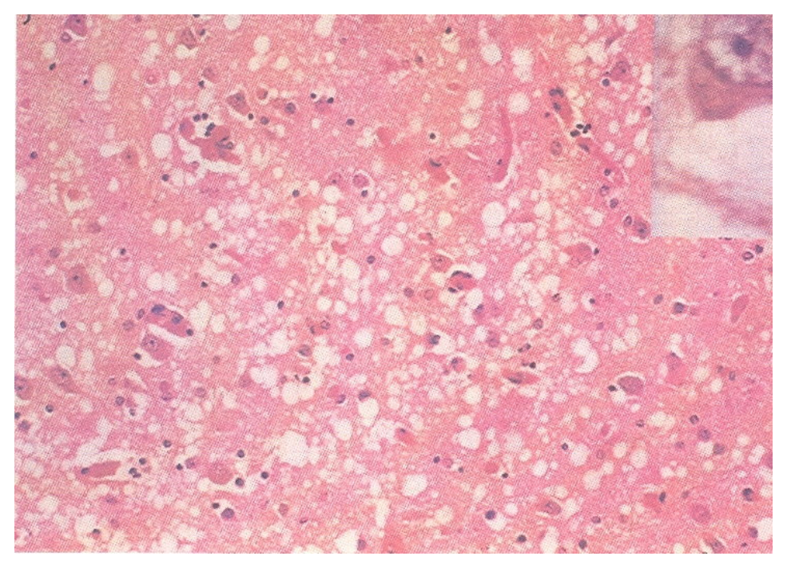
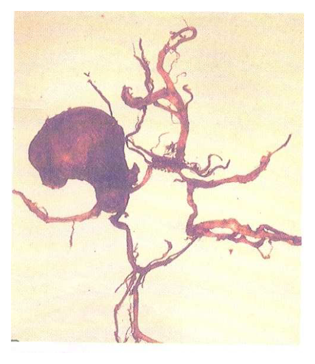

開卷有益 ／
醫師 ／ 醫學（二）（包括微生物免疫學、寄生蟲學、藥理學、病理學、公共衛生學等科目知識及其臨床之應用） ／ 113 年第 1 次113 年第 1 次醫師醫學（二）（包括微生物免疫學、寄生蟲學、藥理學、病理學、公共衛生學等科目知識及其臨床之應用）試題與答案
這一頁是民國 113 年第 1 次醫師醫學（二）（包括微生物免疫學、寄生蟲學、藥理學、病理學、公共衛生學等科目知識及其臨床之應用）的整份歷屆試題，共 100 題，題目與標準答案出自考選部「國家考試試題及測驗式試題答案」開放資料，其中 100 題附有詳解。以下逐題列出題幹、選項與答案；要計時作答或記錄成績，請用線上練習。
考選部原始場次代碼：113020
線上作答這一科 →
全部 100 題
第 1 題
一位牧場工人手臂上出現丘疹（papule），快速演變成潰瘍進而結痂壞死（necrotic eschar） ，淋巴腺亦出現病變及水腫，經細菌分離，發現是一株會產孢子的細菌。此工人最有可能是受何菌感染？
（A） 枯草桿菌（Bacillus subtilis ）（B） 破傷風梭菌（Clostridium tetani）（C） 肉毒桿菌（Clostridium botulinum ）（D） 炭疽桿菌（ Bacillus anthracis）答案：（D）
詳解與考點 正解：牧場工作者、皮膚丘疹迅速形成潰瘍與黑色壞死痂皮，且分離到產孢子菌。這是皮膚炭疽（cutaneous anthrax）的典型表現，病原為炭疽桿菌 Bacillus anthracis，故選 D。
A：枯草桿菌（Bacillus subtilis）雖也能產孢子，但通常不是造成牧場暴露後黑色壞死痂皮的典型病原。
B：破傷風梭菌（Clostridium tetani）由傷口進入後以神經毒素造成肌肉強直，並不以局部黑色壞死痂皮與淋巴水腫為主要表現。
C：肉毒桿菌（Clostridium botulinum）主要因肉毒毒素造成下行性弛緩性麻痺，與本題皮膚病灶不符。
本題考點：皮膚炭疽（cutaneous anthrax）由炭疽桿菌（Bacillus anthracis）引起，常見無痛性丘疹進展為潰瘍與黑色痂皮（eschar）；其為可形成孢子的革蘭氏陽性桿菌。
第 2 題
傷寒瑪莉是一位無症狀的傷寒沙門氏桿菌（Salmonella Typhi）帶原者，通常這株菌最常躲在帶原者的何種器官中？
（A） 肝臟（B） 膽囊（C） 胰臟（D） 大腸答案：（B）
詳解與考點 正解：無症狀的傷寒沙門氏桿菌帶原者。Salmonella Typhi 可在膽囊內長期存留，尤其可附著於膽結石形成生物膜，帶原者再經膽汁將細菌排入腸道與糞便，故選 B。
A：肝臟可在急性感染期受到侵犯，但不是慢性帶原最典型的儲存部位。
C：胰臟不是傷寒沙門氏桿菌慢性帶原的典型棲息部位。
D：大腸是細菌隨膽汁排出後可出現的部位，卻無法解釋長期穩定帶原的主要儲存庫；關鍵仍在膽囊。
本題考點：傷寒帶原（typhoid carrier）常與膽囊（gallbladder）長期定殖有關；膽結石上的生物膜（biofilm）可促進 Salmonella Typhi 持續存在與糞便排菌。
第 3 題
一位 8 歲孩童在吃過漢堡及生菜沙拉後 48 小時，出現出血性腹瀉症狀，到醫院後又發現其有溶血性尿毒症（hemolytic uremic syndrome），最有可能的病原菌是：
（A） 侵襲性大腸桿菌 EIEC（enteroinvasiveE. coli）（B） 腸道凝集性大腸桿菌 EAEC（enteroaggregativeE. coli）（C） 病原性大腸桿菌 EPEC（enteropathogenicE. coli）（D） 產志賀氏毒素大腸桿菌 STEC（Shiga toxin-producingE. coli）答案：（D）
詳解與考點 正解：吃過漢堡、生菜後出血性腹瀉，接著出現溶血性尿毒症症候群（HUS）。產志賀氏毒素大腸桿菌（Shiga toxin-producing E. coli, STEC）可產生志賀氏毒素，傷害腸道與腎臟微血管內皮，導致微血管病性溶血性貧血、血小板低下及急性腎損傷，故選 D。
A：侵襲性大腸桿菌（EIEC）可造成侵襲性發炎性腹瀉，但不是 HUS 的典型病原。
B：腸道凝集性大腸桿菌（EAEC）較常造成持續性水樣腹瀉，與出血性腹瀉合併 HUS 不符。
C：病原性大腸桿菌（EPEC）主要造成嬰幼兒水樣腹瀉，典型機轉是附著與消失性病變，並非志賀氏毒素相關 HUS。
本題考點：產志賀氏毒素大腸桿菌（STEC）可經未熟肉品或受污染蔬菜傳播；志賀氏毒素（Shiga toxin）可造成出血性腸炎與溶血性尿毒症症候群（hemolytic uremic syndrome, HUS）。
第 4 題
有關 β-內醯胺酶抑制劑（β-lactamase inhibitor）之敘述，下列何者最適當？
（A） 具有高度殺菌活性（bactericidal activity）（B） 為窄效型（narrow spectrum）抑制細胞壁生合成之抗生素（C） 與青黴素（penicillin）合併使用可達到藥物協同作用（synergistic effect）（D） 可用於治療耐甲氧西林金黃色葡萄球菌（methicillin-resistant Staphylococcus aureus）答案：（C）
詳解與考點 正解：β-內醯胺酶抑制劑的主要角色。此類藥物抑制某些細菌的 β-內醯胺酶，保護合併使用的青黴素類或其他 β-內醯胺類免於被水解，因而恢復或擴大合併藥物的效力，屬協同作用，故選 C。
A：β-內醯胺酶抑制劑本身通常沒有高度獨立殺菌活性；其重點是保護搭配的 β-內醯胺抗生素。
B：此類藥物不是以直接抑制細胞壁生合成為主要機轉，且「窄效型」不是其核心定義，故不適當。
D：耐甲氧西林金黃色葡萄球菌（MRSA）的抗藥性主因是 altered penicillin-binding protein，並非單靠 β-內醯胺酶抑制即可逆轉，故不能據此治療。
本題考點：β-內醯胺酶抑制劑（β-lactamase inhibitor）可抑制細菌水解 β-內醯胺環的酶；藥物協同作用（synergistic effect）來自保護合併的 β-內醯胺抗生素；MRSA 的關鍵抗藥機轉是 altered PBP。
第 5 題
下列有關脂多醣體（lipopolysaccharide）之敘述，何者最適當？
（A） 脂多醣體與脂胞壁酸（lipoteichoic acid）皆為革蘭氏陰性菌細胞壁特有之結構（B） 又稱為內毒素（endotoxin），核心多醣體（core polysaccharide）結構為其毒素毒性的來源（C） 具有引發發炎反應之活性（D） 煮沸加熱可去除其活性答案：（C）
詳解與考點 正解：脂多醣體的生物活性。脂多醣體（lipopolysaccharide, LPS）是革蘭氏陰性菌外膜成分，其 lipid A 部分可活化先天免疫反應、誘發細胞激素釋放與發炎，故「具有引發發炎反應之活性」最適當，選 C。
A：LPS 是革蘭氏陰性菌外膜成分，但脂胞壁酸（lipoteichoic acid）是革蘭氏陽性菌細胞壁成分，兩者分屬不同菌種結構，故錯。
B：LPS 又稱內毒素（endotoxin）正確，但毒性主要來自 lipid A，不是核心多醣體（core polysaccharide），因此整句錯誤。
D：LPS 相對耐熱，煮沸並不能可靠去除其生物活性；它看似可用一般消毒直覺推論，卻混淆了內毒素與易失活的蛋白性外毒素。
本題考點：脂多醣體（lipopolysaccharide, LPS）是革蘭氏陰性菌外膜成分；lipid A 是內毒素（endotoxin）主要毒性部分；LPS 可誘發先天免疫與發炎反應（inflammatory response）。
第 6 題
下列有關細菌構造之敘述，何者最適當？
（A） 僅革蘭氏陽性菌具有壁膜間隙（periplasmic space）之構造（B） 胜肽聚醣（peptidoglycan）為革蘭氏陰性菌才有之結構（C） 細菌具有粒線體，為產生 ATP 之重要胞器（D） 部分細菌具有鞭毛（flagellum）答案：（D）
詳解與考點 正解：細菌構造的基本共通性與例外。鞭毛（flagellum）是部分細菌用於運動的表面構造，並非所有細菌都有，因此 D 正確且最適當。
A：壁膜間隙（periplasmic space）在革蘭氏陰性菌最明顯，位於內膜與外膜之間；並非僅革蘭氏陽性菌具有，故錯。
B：胜肽聚醣（peptidoglycan）是革蘭氏陽性與陰性菌細胞壁的共同基本成分，只是厚度不同，故錯。
C：細菌是原核生物，沒有具膜的粒線體；ATP 生成主要在細胞膜相關的電子傳遞系統進行，故錯。
本題考點：原核生物（prokaryote）沒有粒線體等具膜胞器；胜肽聚醣（peptidoglycan）構成多數細菌細胞壁；鞭毛（flagellum）是部分細菌的運動構造。
第 7 題
培養流行性嗜血桿菌（Haemophilus influenzae）時，通常會使用何種培養基，以提供這細菌的生長？
（A） 甘露醇鹽瓊脂（mannitol salt agar）（B） 巧克力瓊脂（chocolate agar）（C） 馬康機瓊脂（MacConkey agar）（D） 血液培養基（blood agar）答案：（B）
詳解與考點 正解：流行性嗜血桿菌需要特殊生長因子。Haemophilus influenzae 需要 X factor（hemin）與 V factor（NAD），巧克力瓊脂經加熱使血球裂解，可釋出這些因子，適合其生長，故選 B。
A：甘露醇鹽瓊脂高鹽且可鑑別甘露醇發酵，主要用於選擇葡萄球菌，不適合流行性嗜血桿菌。
C：馬康機瓊脂（MacConkey agar）主要選擇革蘭氏陰性腸桿菌並鑑別乳糖發酵，不能提供本菌所需的 X 與 V factor。
D：一般血液瓊脂中的紅血球未裂解，V factor 也可受血球內酶破壞；因此不如巧克力瓊脂適合培養本菌。
本題考點：流行性嗜血桿菌（Haemophilus influenzae）需 X factor（hemin）與 V factor（NAD）；巧克力瓊脂（chocolate agar）藉加熱裂解血球釋放所需生長因子。
第 8 題
產氣莢膜桿菌（Clostridium perfringens）菌株，依其所產生的毒素可分成不同型別；最常引起壞疽性腸炎（necrotizing enteritis）的是屬於那一型？
（A） A 型（B） B 型（C） C 型（D） D 型答案：（C）
詳解與考點 正解：產氣莢膜桿菌的毒素分型與壞疽性腸炎。Clostridium perfringens C 型可產生 beta toxin，與嚴重腸黏膜壞死及壞疽性腸炎（necrotizing enteritis）特別相關，故選 C。
A：A 型最常見，常與氣性壞疽及食物中毒相關，但不是本題所問壞疽性腸炎的典型型別。
B：B 型可造成某些動物疾病，非人類壞疽性腸炎最典型的分型。
D：D 型主要與動物腸毒血症相關，並非本題所問的人類壞疽性腸炎典型病因。
本題考點：產氣莢膜桿菌（Clostridium perfringens）可依毒素分型；C 型與 beta toxin 及壞疽性腸炎（necrotizing enteritis）相關；A 型較常見於氣性壞疽與食物中毒。
第 9 題
下列那一種抗生素主要不是作用於細菌細胞壁？
（A） 異菸鹼醯（isoniazid）（B） 乙胺丁醇（ethambutol）（C） 利奈唑胺（linezolid）（D） 萬古黴素（vancomycin）答案：（C）
詳解與考點 正解：「主要不是作用於細菌細胞壁」。利奈唑胺（linezolid）結合細菌 50S 核糖體次單元，抑制蛋白質轉譯起始複合體形成，因此主要作用點是蛋白質合成而非細胞壁，故選 C。
A：異菸鹼醯（isoniazid）抑制分枝桿菌黴菌酸（mycolic acid）合成，影響分枝桿菌特有細胞壁成分，故屬細胞壁相關作用。
B：乙胺丁醇（ethambutol）抑制 arabinogalactan 的合成，破壞分枝桿菌細胞壁結構，故不是答案。
D：萬古黴素（vancomycin）結合胜肽聚醣前驅物的 D-Ala-D-Ala，直接抑制細胞壁合成，故不是答案。
本題考點：利奈唑胺（linezolid）是 oxazolidinone，作用於 50S ribosome 抑制蛋白質合成；異菸鹼醯（isoniazid）與乙胺丁醇（ethambutol）作用於分枝桿菌細胞壁；萬古黴素（vancomycin）抑制胜肽聚醣（peptidoglycan）合成。
第 10 題
下列有關普里昂（prion）的敘述，何者最不適當？
（A） 病人被普里昂感染只能在腦部測到其存在（B） 一般對抗病毒的化學及物理方法無法抑制普里昂的活性（C） 普里昂感染之病人腦內會產生海綿狀腦病變（D） 普里昂是以蛋白質的形式進行感染答案：（A）
詳解與考點 正解：「最不適當」以及普里昂的組織分布。異常普里昂蛋白可在神經系統外的組織被偵測到，且不同疾病型態的周邊組織分布不同；因此「只能在腦部測到」過度絕對，為錯誤敘述，故選 A。
B：普里昂對許多一般用於病毒的化學與物理去污方法有高度抗性，通常需要更嚴格的去污策略；敘述方向正確。
C：普里昂疾病的典型病理變化是海綿狀腦病變（spongiform encephalopathy），故正確。
D：普里昂是具異常構形、可誘導正常蛋白錯誤摺疊的感染性蛋白質，不含核酸，故敘述正確。
本題考點：普里昂（prion）是感染性蛋白質（infectious protein）；可造成海綿狀腦病變（spongiform encephalopathy）；其對常規去污方法具相對抗性，且不僅限於腦組織。
第 11 題
有關 parvovirus B19 的敘述，下列何者最適當？
（A） 為雙股 DNA 病毒（B） 主要傳播途徑為糞口傳染（C） 感染並引起紅血球的先驅細胞（erythroid precursor）溶解（D） 感染兒童時，造成嬰兒玫瑰疹答案：（C）
詳解與考點 正解：parvovirus B19 對紅血球系的嗜性。Parvovirus B19 會感染骨髓中的 erythroid precursor，抑制並破壞紅血球前驅細胞，因而可造成暫時性再生不良危象或胎兒嚴重貧血，故選 C。
A：Parvovirus B19 是單股 DNA 病毒，不是雙股 DNA 病毒。
B：其常見傳播途徑是呼吸道分泌物，亦可垂直或經血液傳播；糞口傳染不是主要途徑。
D：兒童感染 B19 典型造成傳染性紅斑（erythema infectiosum），又稱第五病；嬰兒玫瑰疹主要與 human herpesvirus 6 或 7 相關。
本題考點：Parvovirus B19 是單股 DNA virus，具紅血球前驅細胞（erythroid precursor）嗜性；可造成傳染性紅斑（erythema infectiosum）與再生不良危象（aplastic crisis）。
第 12 題
藉由血清學的方式無法檢驗出正常的 prion（PrPC）與異常的 prion（PrPSC）的差異。一種新的檢驗方式稱作“real-time quaking-induced conversion（RT-QuIC）”，可以快速檢驗出檢體內是否含有 PrPSC。這是利用 prion 的那一種特性？
（A） PrPC會聚集成纖絲（prion fibril）（B） PrPSC會聚集成纖絲（prion fibril）（C） PrPC會將 PrPSC轉換成 PrPC（D） PrPSC的蛋白質半衰期較 PrPC短答案：（B）
詳解與考點 正解：RT-QuIC 偵測 PrPSc 的原理。PrPSc 具錯誤摺疊且易形成 amyloid fibril 的特性，檢驗中微量 PrPSc 可作為種子，誘導受質蛋白轉換與聚集，再以即時訊號偵測纖絲形成，因此選 B。
A：正常的 PrPC 並不是自發形成纖絲的主要特性；它須在異常種子誘導下才可發生構形轉換與聚集。
C：方向顛倒。異常的 PrPSc 是促使正常 PrPC 轉換為異常構形的種子，而不是 PrPC 將 PrPSc 轉回 PrPC。
D：RT-QuIC 的檢出依據是種子誘導的聚集反應，不是比較 PrPSc 與 PrPC 的蛋白質半衰期。
本題考點：即時震盪誘導轉換檢驗（real-time quaking-induced conversion, RT-QuIC）利用 PrPSc 的種子化（seeding）能力；錯誤摺疊蛋白聚集（amyloid fibril formation）可產生可偵測訊號；PrPC 轉換為 PrPSc 是普里昂複製核心。
第 13 題
痘病毒（poxvirus）與大多數其他人類 DNA 病毒主要之差異為：
（A） 在細胞質複製（B） 其基因體為線型雙股 DNA（C） 有自己的 DNA 聚合酶（D） 利用 strand-displacement 的方式複製其 DNA答案：（A）
詳解與考點 正解：痘病毒相對於「大多數其他人類 DNA 病毒」的主要差異。多數人類 DNA 病毒在細胞核內利用宿主核內機制複製；痘病毒體積大且攜帶足夠複製與轉錄相關酶，可在細胞質完成複製，因此選 A。
B：痘病毒為線型雙股 DNA 病毒正確，但這不是其與大多數 DNA 病毒最具代表性的主要差異。
C：痘病毒確有自己的 DNA 聚合酶，這與其細胞質複製相配合；但本題問主要差異時，最直接的分類辨識點是複製位置在細胞質。
D：痘病毒的 DNA 複製可採 strand-displacement 機制，但此為其複製細節，並非題幹所問與大多數人類 DNA 病毒最核心的差別。
本題考點：痘病毒（poxvirus）是大型雙股 DNA virus；細胞質複製（cytoplasmic replication）是其重要例外；其攜帶 DNA polymerase 等酶以支援不依賴細胞核的複製。
第 14 題
有關病毒感染治療藥物之敘述，下列何者最不適當？
（A） 茚地那韋（indinavir）常用來治療單純疱疹病毒（herpes simplex virus）之感染（B） 利巴韋林（ribavirin）合併干擾素（interferon）可用於治療 C 型肝炎病毒之感染（C） 被狂犬病動物咬到之病人，必須施打馬或人之抗狂犬病病毒血清或免疫球蛋白（D） 金剛烷胺（amantadine）可抑制 A 型流行性感冒病毒（influenza A virus）答案：（A）
詳解與考點 正解：藥物與病毒的配對。茚地那韋（indinavir）是 HIV protease inhibitor，用於 HIV 感染治療，不是治療單純疱疹病毒（herpes simplex virus）的藥物；HSV 常用藥物屬抑制病毒 DNA 聚合酶的抗病毒藥，故 A 最不適當。
B：利巴韋林（ribavirin）合併干擾素（interferon）曾是 C 型肝炎的治療組合，敘述在該治療脈絡正確；目前 C 型肝炎治療已以直接作用抗病毒藥為主，故這是具治療時代差異、時效敏感的舊式考題敘述。
C：未曾接種且經風險評估需接受暴露後預防者，應給予抗狂犬病免疫球蛋白或血清合併疫苗；曾完整接種者不再給予免疫球蛋白。題目以「必須」概括所有遭咬者並不周全，但官方答案為 A。
D：金剛烷胺（amantadine）可抑制 A 型流行性感冒病毒的 M2 ion channel；但臨床使用受抗藥性影響，並非現行常規首選。
本題考點：茚地那韋（indinavir）是 HIV protease inhibitor；單純疱疹病毒（herpes simplex virus）治療以抗病毒 DNA polymerase 抑制為核心；狂犬病（rabies）暴露後預防須依既往疫苗接種狀態決定是否給予被動免疫（passive immunization）。
第 15 題
在托育中心的一歲男嬰，持續兩天水瀉並嘔吐，且有輕微發燒現象，之後因為脫水而住院。他最可能受到下列何種病毒的感染？
（A） 輪狀病毒（rotavirus）（B） 流感病毒（influenza virus）（C） B 型肝炎病毒（hepatitis B virus）（D） EB 病毒（Epstein-Barr virus）答案：（A）
詳解與考點 正解：托育中心的一歲幼兒，急性水瀉、嘔吐、輕微發燒且造成脫水住院。輪狀病毒（rotavirus）是嬰幼兒嚴重急性胃腸炎的典型病原，常在托育場所傳播，最重要併發症是脫水，故選 A。
B：流感病毒（influenza virus）主要造成呼吸道症狀與全身不適，不是此年齡層急性水瀉合併脫水的典型病原。
C：B 型肝炎病毒（hepatitis B virus）主要侵犯肝臟，急性胃腸炎並非其典型臨床表現。
D：EB 病毒（Epstein-Barr virus）常與傳染性單核球增多症相關，可有發燒、咽喉炎與淋巴結腫大，與本題腸胃炎型態不符。
本題考點：輪狀病毒（rotavirus）是幼兒急性胃腸炎（acute gastroenteritis）的重要病原；常見表現為水樣腹瀉、嘔吐與發燒；臨床處置重點是預防與矯正脫水（dehydration）。
第 16 題
關於 Emergomyces 之敘述，下列何者最不適當？
（A） 為溫度雙型性真菌，即 25℃培養呈絲狀（mold form），37℃培養呈酵母狀（yeast form）（B） 主要經由呼吸道吸入孢子感染，常出現皮膚病灶（C） 多數被感染者都是健康人，並無明顯免疫不全的症狀（D） 可使用 amphotericin B 和 triazole 治療答案：（C）
詳解與考點 正解：Emergomyces 常見於免疫受損宿主，而非多數健康人。Emergomyces 為溫度雙型性真菌，感染通常由吸入環境孢子開始，之後可造成播散性疾病及明顯皮膚病灶；病人常有 HIV 感染等細胞免疫缺損。因此（C）稱多數感染者健康且無免疫不全，與其典型流行病學不符，為最不適當敘述，故選 C。
A：25℃呈絲狀、37℃呈酵母狀是溫度雙型性真菌（thermal dimorphic fungus）的典型培養型態，符合 Emergomyces 的特徵，故非答案。
B：吸入孢子是主要感染途徑；在免疫低下宿主中，感染可經血行播散至皮膚，皮膚丘疹、結節或潰瘍是重要線索，故此敘述適當。
D：嚴重或播散性 emergomycosis 可使用 amphotericin B 誘導治療，後續以 triazole 類藥物治療或維持，故此敘述適當。
本題考點：Emergomyces 與 emergomycosis——溫度雙型性真菌感染常見於細胞免疫低下者，常由吸入後播散並出現皮膚病灶；抗黴菌治療（antifungal therapy）可使用 amphotericin B 與 triazole。
第 17 題
一般而言，棘白菌素（Echinocandin）對下列何種真菌感染的治療效果最好？
（A） 毛黴菌（Mucormycetes spp.）（B） 隱球菌（Cryptococcus spp.）（C） 鐮孢菌（Fusarium spp.）（D） 麴菌（Aspergillus spp.）答案：（D）
詳解與考點 正解：棘白菌素（echinocandin）抑制真菌細胞壁的 β-1,3-D-glucan 合成，對 Candida 與 Aspergillus 的活性最具代表性。四個選項中，麴菌（Aspergillus spp.）對此類藥物較具感受性，故治療效果最好的是 D。
A：毛黴菌（Mucormycetes spp.）細胞壁組成及藥物感受性不同，對棘白菌素通常具有內在抗性；它看似也是真菌感染，但不能由「廣效抗黴菌藥」推論棘白菌素有效。
B：隱球菌（Cryptococcus spp.）對棘白菌素感受性差，治療通常不以棘白菌素為主，故非最佳選項。
C：鐮孢菌（Fusarium spp.）常具多重抗黴菌藥抗性，棘白菌素的治療活性有限，故不如對 Aspergillus 的效果。
本題考點：棘白菌素（echinocandin）——抑制 β-1,3-D-glucan synthase，破壞真菌細胞壁；抗黴菌藥物感受性（antifungal susceptibility）——Aspergillus 相對具感受性，Cryptococcus、Mucormycetes 與 Fusarium 通常不是其主要適應對象。
第 18 題
經由造血作用（hematopoiesis）產生免疫細胞的過程，最不可能在動物體內何處發生？
（A） yolk sac（B） fetal liver（C） fetal heart（D） bone marrow答案：（C）
詳解與考點 正解：胚胎到成人的造血位置會隨發育階段轉換。早期造血可在卵黃囊（yolk sac）開始，胎兒期主要轉至肝臟，出生後骨髓成為主要造血場所；心臟不是正常造血器官。因此最不可能發生造血作用的是（C）fetal heart，故選 C。
A：卵黃囊是胚胎早期原始造血（primitive hematopoiesis）的場所，可產生早期血球細胞，故非答案。
B：胎肝在胎兒發育中是重要的造血場所，會支持造血幹細胞擴增及血球生成，故非答案。
D：骨髓是出生後主要的終生造血場所，可由造血幹細胞持續產生免疫細胞與其他血球，故非答案。
本題考點：造血作用（hematopoiesis）——胚胎早期由卵黃囊開始，胎兒期以肝臟為主，之後轉移至骨髓；造血幹細胞（hematopoietic stem cell）在適當微環境中分化為各類血球與免疫細胞。
第 19 題
關於第一型干擾素（type I interferon），下列敘述何者最不適當？
（A） 病毒感染有核細胞後，會刺激第一型干擾素的產生（B） 第一型干擾素可以直接參與分解病毒（C） 第一型干擾素可以活化細胞內基因以破壞病毒 mRNA 及抑制病毒蛋白的轉譯（D） 第一型干擾素可以誘導細胞第一型 MHC 分子的表達，增加感染的細胞呈獻抗原給 CD8 毒殺 T 細胞答案：（B）
詳解與考點 正解：第一型干擾素（type I interferon）主要是宿主細胞間的抗病毒訊號，不是直接裂解病毒的分子。IFN-α 與 IFN-β 使鄰近細胞進入抗病毒狀態，誘導抑制病毒 mRNA 與蛋白質轉譯的基因，並增加 MHC class I 表現；它們本身不直接分解病毒。因此最不適當的是 B，故選 B。
A：病毒感染有核細胞可透過模式辨識受體感知病毒核酸，誘導第一型干擾素產生，敘述正確。
C：第一型干擾素會啟動 interferon-stimulated genes，使細胞產生抑制病毒核酸與蛋白質合成的機制，故敘述適當。
D：第一型干擾素可上調細胞表面的 MHC class I，增進感染細胞將病毒胜肽呈獻給 CD8 T 細胞的能力，故敘述適當。
本題考點：第一型干擾素（type I interferon）——IFN-α、IFN-β 由病毒感染誘導，建立抗病毒狀態而非直接殺滅病毒；MHC class I 抗原呈獻（antigen presentation）——協助 CD8 T 細胞辨識感染細胞。
第 20 題
下列有關 T 細胞或 B 細胞抗原受體的敘述，何者最不適當？
（A） TCR α chain 和 TCR β chain 形成配對，而 TCR γ chain 和 TCR δ chain 形成配對（B） 氫鍵與凡德瓦力參與受體與抗原的結合過程（C） clonal expansion 是指淋巴細胞於胸腺或骨髓的發育過程中，其細胞表面上的抗原受體與外來抗原結合後，引起細胞大量增殖（D） MHC restriction 是指成熟 T 細胞的 TCR 只能夠辨識自身細胞 MHC 分子呈獻的抗原，不會辨識其他 MHC 分子呈獻的相同抗原答案：（C）
詳解與考點 正解：clonal expansion 發生在周邊成熟淋巴球接受抗原刺激之後，不是在胸腺或骨髓的發育過程中。胸腺與骨髓的選殖是建立或刪除受體特異性的發育與耐受步驟；成熟淋巴球在周邊遇到特異性抗原並獲得適當共刺激後才大量增殖。因此（C）把 clonal expansion 的場所與時機混為一談，最不適當，故選 C。
A：TCR 可由 α、β 鏈配對形成 αβ TCR，也可由 γ、δ 鏈配對形成 γδ TCR，敘述正確。
B：抗原受體與抗原表位的專一性結合主要仰賴非共價作用力，包括氫鍵與凡德瓦力，故敘述適當。
D：成熟 αβ T 細胞的 TCR 具有 MHC restriction，會辨識自身 MHC 分子結合的特定胜肽；相同胜肽若由不同 MHC 呈獻，通常不會被同一 TCR 辨識，故敘述適當。
本題考點：克隆擴增（clonal expansion）——成熟淋巴球在周邊接受抗原與共刺激後增殖；中樞耐受（central tolerance）——胸腺與骨髓主要負責受體選擇及自體反應淋巴球的處理；MHC restriction——TCR 同時辨識自身 MHC 與其呈獻胜肽。
第 21 題
有關 B 細胞、樹突細胞及巨噬細胞之敘述，下列何者最適當？
（A） 三者皆會表現 MHC class II 及 B7 分子，所以被稱為抗原呈獻細胞（B） 三者皆會表現 MHC class II，但不表現 MHC class I（C） 三者皆會活化 T 細胞，但以 B 細胞最易活化 naïve T 細胞（D） 三者平常皆維持不成熟狀態在周邊巡邏，遇到抗原後會分化進入成熟狀態，遷移至附近淋巴組織中答案：（A）
詳解與考點 正解：B 細胞、樹突細胞與巨噬細胞皆屬專業抗原呈獻細胞（professional antigen-presenting cells）。三者可表現 MHC class II，並在適當活化狀態表現共刺激分子 B7，以呈獻抗原並提供 T 細胞活化所需的第二訊號，故（A）最適當。
B：三者除了 MHC class II，也都是有核細胞，因此會表現 MHC class I；把 MHC class II 表現誤當成不表現 MHC class I，故錯。
C：三者雖能參與 T 細胞活化，但最有效活化 naïve T 細胞的是成熟樹突細胞（dendritic cell），不是 B 細胞。B 細胞較擅長呈獻其特異性受體已捕捉到的抗原給已啟動的輔助 T 細胞。
D：未成熟樹突細胞會在周邊攝取抗原後成熟並遷移至淋巴組織，但這不是 B 細胞與巨噬細胞共同的標準遷移模式，故不能套用到三者。
本題考點：專業抗原呈獻細胞（professional antigen-presenting cells）——B 細胞、樹突細胞、巨噬細胞可用 MHC class II 呈獻外源性抗原並提供 B7 共刺激；naïve T cell priming——成熟樹突細胞最有效。
第 22 題
有關抗體之敘述，下列何者最適當？
（A） IgA 可穿過胎盤，讓胎兒獲得被動免疫力（B） IgE 是活化補體的最主要抗體（C） IgM 是 B 細胞活化後最早分泌出來的抗體（D） IgG 是活化 mast cells 的最主要抗體答案：（C）
詳解與考點 正解：初次 B 細胞活化後，最早大量分泌的抗體是 IgM。未經類別轉換的 B 細胞先產生 IgM，之後在適當細胞激素與 T 細胞協助下才可轉換為其他抗體類別，故（C）最適當。
A：可穿過胎盤、提供胎兒被動免疫的是 IgG，不是 IgA。IgA 的重要角色是黏膜分泌物中的防禦，因此此選項看似同為被動免疫相關抗體，實則抗體類別錯置。
B：有效活化經典補體途徑的主要抗體是 IgM，其次是部分 IgG；IgE 不以補體活化為主要功能，故錯。
D：mast cell 表面的高親和力 Fcε receptor 主要結合 IgE，過敏原交聯 IgE 才引發去顆粒，故不是 IgG。
本題考點：抗體類別（immunoglobulin isotypes）——IgM 是初次免疫反應早期分泌的抗體並有效活化補體；IgG 可經胎盤；IgA 負責黏膜防禦；IgE 介導肥大細胞相關過敏反應。
第 23 題
當病原菌入侵腸道時，腸道上皮細胞最不可能利用下列何種分子來幫助清除病原菌？
（A） TLRs（B） NOD1 及 NOD2（C） PGE2（D） MIC-A 及 MIC-B答案：（C）
詳解與考點 正解：腸道上皮細胞清除病原菌主要依賴病原辨識與先天免疫效應分子；PGE2 是發炎脂質介質，並非其直接辨識或清除病原菌的主要分子。TLRs 與 NOD1/NOD2 可辨識微生物成分，MIC-A/MIC-B 可作為壓力誘導配體啟動上皮免疫監視；因此最不可能的是（C）PGE2，故選 C。
A：TLRs（Toll-like receptors）能辨識病原相關分子模式，啟動上皮細胞的先天免疫與抗菌反應，故非答案。
B：NOD1 及 NOD2 是細胞內模式辨識受體，可感知細菌肽聚糖成分並誘導發炎或抗菌反應，故非答案。
D：MIC-A 及 MIC-B 是受壓力細胞可表現的配體，能被 NKG2D 辨識並促進 NK 細胞或特定 T 細胞的免疫監視，故可參與清除感染細胞。
本題考點：模式辨識受體（pattern-recognition receptors）——TLRs 與 NOD1/NOD2 感知微生物成分；腸道先天免疫（intestinal innate immunity）——上皮細胞以受體與壓力訊號協助抗菌防禦。
第 24 題
先天性免疫缺失疾病（primary immunodeficiency diseases）經常是因為與免疫細胞發育或是功能相關的基因缺陷造成。下列疾病與其缺陷基因之配對，何者最不適當？
（A） X-linked SCID：IL-2 receptor common gamma chain（B） Wiskott-Aldrich syndrome：NF-κB（C） Bruton's X-linked agammaglobulinemia：BTK（D） DiGeorge syndrome：TBX1答案：（B）
詳解與考點 正解：Wiskott-Aldrich syndrome 的致病基因是 WAS，而不是 NF-κB。WAS 編碼調節肌動蛋白骨架的蛋白質，缺陷可造成免疫缺陷、濕疹與血小板減少；故（B）的疾病與基因配對錯誤，最不適當，故選 B。
A：X-linked SCID 常由 IL-2 receptor common gamma chain 缺陷造成，會影響多種細胞激素受體訊號，故配對正確。
C：Bruton’s X-linked agammaglobulinemia 與 BTK 缺陷相關，B 細胞發育停滯而造成低丙種球蛋白血症，故配對正確。
D：DiGeorge syndrome 常與 TBX1 相關的發育缺陷有關，造成胸腺發育不全與 T 細胞缺陷，故配對正確。
本題考點：原發性免疫缺陷（primary immunodeficiency）——X-linked SCID 與 common gamma chain、X-linked agammaglobulinemia 與 BTK、DiGeorge syndrome 與 TBX1 的典型配對；Wiskott-Aldrich syndrome——由 WAS 基因缺陷造成。
第 25 題
下列何者屬於 IgE 介導的第一型過敏反應疾病？
（A） 麩質病（celiac disease）（B） 血清病（serum sickness）（C） 過敏性鼻結膜炎（allergic rhinoconjunctivitis）（D） 過敏性接觸性皮膚炎（allergic contact dermatitis）答案：（C）
詳解與考點 正解：第一型過敏反應（type I hypersensitivity）由 IgE 與肥大細胞即時介導。過敏性鼻結膜炎（allergic rhinoconjunctivitis）在過敏原暴露後可快速出現鼻癢、流鼻水、結膜充血等症狀，屬 IgE 介導反應，故選 C。
A：麩質病（celiac disease）主要是對麩質的 T 細胞介導免疫反應與自體抗體反應，不是典型 IgE 第一型過敏。
B：血清病（serum sickness）由可溶性免疫複合體沉積引起，屬第三型過敏反應（type III hypersensitivity），故非答案。
D：過敏性接觸性皮膚炎是接觸致敏原後的延遲型 T 細胞反應，屬第四型過敏反應（type IV hypersensitivity），故非答案。
本題考點：第一型過敏反應（type I hypersensitivity）——IgE 交聯肥大細胞引起即時反應；過敏反應分類（Gell and Coombs classification）——血清病為第三型，接觸性皮膚炎為第四型。
第 26 題
IL-10 基因剔除小鼠（gene knockout mice）最可能引發下列何種自體免疫疾病？
（A） 發炎性腸道疾病（inflammatory bowel disease）（B） 類紅斑性狼瘡（lupus-like syndrome）（C） 淋巴細胞增生性疾病（lymphoproliferative disease）（D） 類風濕性關節炎（rheumatoid arthritis）答案：（A）
詳解與考點 正解：IL-10 是抑制腸道發炎、維持黏膜免疫耐受的關鍵抗發炎細胞激素。IL-10 基因剔除小鼠失去對腸道菌叢驅動免疫反應的煞車，最典型會自發形成慢性腸炎與發炎性腸道疾病（inflammatory bowel disease），故選 A。
B：類紅斑性狼瘡較典型於影響自體反應淋巴球清除或耐受機制的缺陷，並非 IL-10 缺失小鼠的代表性表現。
C：淋巴細胞增生性疾病常與 Fas/Fas ligand 路徑缺陷導致凋亡失常相關，與 IL-10 缺失的典型腸炎不同。
D：類風濕性關節炎可涉及多種發炎細胞激素，但不是 IL-10 基因剔除小鼠最具代表性的自發疾病。
本題考點：IL-10（interleukin-10）——重要抗發炎細胞激素，可限制腸道黏膜免疫反應；免疫耐受（immune tolerance）——對共生菌叢失調的反應可導致發炎性腸道疾病。
第 27 題
腫瘤抗原根據其特徵可以分為腫瘤相關抗原（tumor associated antigen, TAA）與腫瘤特異性抗原（tumorspecific antigen, TSA），下列關於腫瘤抗原的描述，何者最不適當？
（A） TAA 這類抗原在正常組織與癌細胞中都可能表現，但在癌細胞中的表現量通常比正常組織要高（B） TSA 因為是基因突變、基因重組或病毒感染所產生的抗原，使用全外顯子定序（whole exome sequence,WES）是目前最常用來鑑定 TSA 的方法（C） 目前 CAR-T 所針對的抗原，主要是 TAA 為主，少部分常見的 TSA，亦可成為 CAR-T 的目標（D） 使用單細胞轉錄體定序（single cell transcriptome sequence），是目前最常用來鑑定 TAA 的方法答案：（D）
詳解與考點 正解：腫瘤相關抗原（TAA）需比較腫瘤與正常組織的表現量與分布，並不是以單細胞轉錄體定序作為「目前最常用」的鑑定方法。TAA 可在正常組織表現但在腫瘤過度表現；鑑定時核心是找出可安全區分腫瘤與正常組織的抗原。故（D）將特定技術說成最常用鑑定 TAA 的方法，最不適當，故選 D。
A：TAA 可在正常組織與腫瘤均表現，但腫瘤中的表現量較高，這正是其與 TSA 的主要區別，故正確。
B：腫瘤特異性抗原（TSA）常源自體細胞突變、重組或病毒基因；whole exome sequencing 可用於找出可能產生新抗原的突變，故敘述適當。
C：CAR-T 治療多鎖定腫瘤表面 TAA；可被辨識的 TSA 較少，故此概括方向適當。它看似與「腫瘤特異」更理想相衝突，但實務上 CAR-T 的靶點仍受表面表現與可及性限制。
本題考點：腫瘤相關抗原（tumor-associated antigen, TAA）——正常組織亦可表現、但腫瘤過度表現；腫瘤特異性抗原（tumor-specific antigen, TSA）——常源自突變或病毒；腫瘤免疫治療靶點（tumor immunotherapy targets）須兼顧特異性與安全性。
第 28 題
下列何種腫瘤目前可以注射疫苗來預防？
（A） non-Hodgkin's lymphoma（B） breast cancer with overexpression the receptor of HER-2/neu（C） metastatic melanoma（D） HPV-16 related cervical cancer答案：（D）
詳解與考點 正解：可用疫苗預防的癌症，通常必須有可預防的致癌感染因子。HPV-16 持續感染是子宮頸癌的重要病因，接種 HPV 疫苗可預防相關 HPV 感染，進而降低 HPV-16 相關子宮頸癌的發生，因此選 D。
A：non-Hodgkin’s lymphoma 是異質性的淋巴瘤集合，目前沒有以預防其發生為目的的常規疫苗，故非答案。
B：HER-2/neu 過度表現乳癌可使用針對 HER-2 的標靶治療，但這不等於已有疫苗可預防此癌症；看似都針對腫瘤抗原，治療性標靶藥與預防性疫苗的概念不同。
C：metastatic melanoma 可接受免疫治療等處置，但沒有可預防其發生的常規癌症疫苗，故非答案。
本題考點：癌症預防疫苗（cancer preventive vaccine）——以預防致癌病原感染為核心；人類乳突病毒（human papillomavirus, HPV）——高風險型 HPV 感染與子宮頸癌發生密切相關。
第 29 題
寄生蟲感染人體所造成之症狀，下列敘述何者正確？①犬蛔蟲（Toxocara canis）可造成眼部幼蟲移行症（ocular larva migrans） ②班氏絲蟲（Wuchereria bancrofti）的慢性感染可造成下肢象皮病（elephantiasis） ③免疫低下之病患受到鞭蟲（Trichuris trichiura）感染必造成死亡 ④蛔蟲（Ascaris lumbricoides）感染可能出現異位寄生（ectopic parasitism）
（A） 僅①③（B） 僅②④（C） 僅①②④（D） ①②③④答案：（C）
詳解與考點 正解：逐一判斷四個寄生蟲臨床敘述。①犬蛔蟲可造成眼部幼蟲移行症，正確；②班氏絲蟲慢性感染可造成淋巴阻塞與下肢象皮病，正確；③鞭蟲感染即使在免疫低下者也非「必造成死亡」，錯誤；④蛔蟲可移行至膽道、胰管等處形成異位寄生，正確。因此正確組合為①②④，故選 C。
A：僅列①③，漏掉正確的②與④，且把「必造成死亡」的③納入，故錯。
B：僅列②④，雖兩項皆正確，但漏掉同樣正確的①犬蛔蟲眼部幼蟲移行症，故錯。
D：①、②、④雖正確，但③的「必造成死亡」過度絕對，寄生蟲感染嚴重度會受蟲量、宿主與併發症影響，故不能列入。
本題考點：幼蟲移行症（larva migrans）——Toxocara canis 可造成眼部病變；淋巴絲蟲病（lymphatic filariasis）——Wuchereria bancrofti 可致象皮病；異位寄生（ectopic parasitism）——Ascaris lumbricoides 可進入膽胰系統。
第 30 題
人類感染下列何種寄生蟲，必須先經由心肺移行，才能到達小腸發育為成蟲？
（A） 犬蛔蟲（Toxocara canis）（B） 海獸胃線蟲（Anisakis spp.）（C） 十二指腸鉤蟲（Ancylostoma duodenale）（D） 有棘頜口線蟲（Gnathostoma spinigerum）答案：（C）
詳解與考點 正解：官方答案為 C；惟十二指腸鉤蟲（Ancylostoma duodenale）亦可經口感染，未必都經心肺移行。本題依教科書典型經皮感染生活史作答：幼蟲穿透皮膚後經血流、右心與肺，上行至咽部被吞入，最後在小腸成熟為成蟲，故選 C。
A：犬蛔蟲在人類為偶然宿主，幼蟲可組織移行但通常不會在小腸成熟為成蟲。
B：海獸胃線蟲隨生食魚類或頭足類進入人體後主要侵入胃腸壁，並非經典型心肺移行後在小腸成熟。
D：有棘頜口線蟲在人類亦不能完成至成蟲的生活史，幼蟲可在組織移行。
本題考點：鉤蟲生活史（hookworm life cycle）——典型經皮感染可經心肺移行後回到腸道；人類偶然宿主（accidental host）——Toxocara、Gnathostoma 多不會在人體成熟。
第 31 題
下列有關血吸蟲（blood flukes）之致病機制敘述，何者最適當？
（A） 曼森血吸蟲（Schistosoma mansoni）成蟲主要寄生於人體之膀胱靜脈叢（B） 埃及血吸蟲（Schistosoma haematobium）成蟲主要寄生於人體之腸繫膜靜脈叢（C） 血吸蟲蟲卵經血流、異位陷入（ectopic trapped）腎臟而導致肉芽腫（granuloma）（D） 日本血吸蟲（Schistosoma japonicum）成蟲之每日產卵量（egg deposition）最多可超過 3000 顆答案：（D）
詳解與考點 正解：日本血吸蟲（Schistosoma japonicum）的高產卵量是其重要致病特徵，可使大量蟲卵滯留組織並誘發肉芽腫與纖維化。其每日產卵量最多可超過 3000 顆，故（D）最適當。
A：曼森血吸蟲成蟲主要位於腸繫膜靜脈叢，不是膀胱靜脈叢，故錯。
B：埃及血吸蟲成蟲主要位於膀胱周邊靜脈叢，較常造成泌尿生殖道病變，不是腸繫膜靜脈叢，故錯。
C：血吸蟲的主要病理機制是蟲卵沉積於腸壁、肝臟或泌尿道等組織後引發肉芽腫；把腎臟的異位陷入描述為其典型致病機制，並不適當。
本題考點：血吸蟲病（schistosomiasis）——病理傷害主要由蟲卵誘發肉芽腫（granuloma）與纖維化；蟲體寄生部位——S. mansoni、S. japonicum 偏腸繫膜靜脈，S. haematobium 偏膀胱靜脈叢。
第 32 題
水生植物可當何種寄生蟲之中間宿主？①牛羊肝吸蟲（Fasciola hepatica） ②薑片蟲（Fasciolopsis buski） ③中華肝吸蟲（Clonorchis sinensis） ④槍狀肝吸蟲（Dicrocoelium dendriticum）
（A） ①②（B） ③④（C） ①③（D） ②④答案：（A）
詳解與考點 正解：水生植物可攜帶附著其上的囊蚴，成為人類食入的感染來源。牛羊肝吸蟲（Fasciola hepatica）與薑片蟲（Fasciolopsis buski）的囊蚴皆可附著水生植物，故正確組合為①②，選 A。
B：中華肝吸蟲（Clonorchis sinensis）的第二中間宿主是淡水魚；槍狀肝吸蟲（Dicrocoelium dendriticum）則涉及陸生蝸牛與螞蟻，兩者皆非水生植物，故錯。
C：①正確，但③的感染來源是生食或未熟淡水魚，而非水生植物，故錯。
D：②正確，但④的感染期位於螞蟻體內；其生活史看似同樣經中間宿主，但不是水生植物，故錯。
本題考點：吸蟲生活史（trematode life cycle）——Fasciola hepatica、Fasciolopsis buski 的囊蚴可附著水生植物；食源性寄生蟲（food-borne parasites）——Clonorchis 與淡水魚、Dicrocoelium 與螞蟻相關。
第 33 題
一位臺商近日因腹部腫脹及發燒從中國回來臺灣就醫，經醫師檢查發現有貧血（anemia）及肝脾腫大（hepatosplenomegaly），住院後進行骨髓穿刺可見巨噬細胞內有寄生蟲。依據上述結果，這位臺商最可能感染下列何種寄生蟲？
（A） 枯西氏錐蟲（Trypanosoma cruzi）（B） 熱帶利什曼原蟲（Leishmania tropica）（C） 布氏岡比亞錐蟲（Trypanosoma brucei gambiense）（D） 杜氏利什曼原蟲（Leishmania donovani）答案：（D）
詳解與考點 正解：發燒、肝脾腫大、貧血，加上骨髓巨噬細胞內見寄生蟲，構成內臟利什曼病（visceral leishmaniasis）的典型圖像。杜氏利什曼原蟲（Leishmania donovani）的 amastigotes 會寄生於單核吞噬細胞系統，造成肝脾腫大與骨髓抑制相關表現，故選 D。
A：枯西氏錐蟲主要造成 Chagas disease，急性期或慢性心臟、腸道病變較具代表性，並非典型骨髓巨噬細胞內寄生的內臟利什曼病表現。
B：熱帶利什曼原蟲主要造成皮膚利什曼病（cutaneous leishmaniasis），不符合明顯肝脾腫大與骨髓所見。
C：布氏岡比亞錐蟲造成非洲睡眠病，常見發燒、淋巴結病變及中樞神經症狀，與本題單核吞噬細胞內寄生線索不符。
本題考點：內臟利什曼病（visceral leishmaniasis）——L. donovani 感染單核吞噬細胞，造成發燒、肝脾腫大與貧血；amastigote——可在巨噬細胞內觀察到的組織型態。
第 34 題
有關諾氏瘧原蟲（Plasmodium knowlesi）的敘述，下列何者錯誤？
（A） 宿主專一性不強，可感染人類或非人靈長類（B） 並不限定入侵年輕或老的紅血球（C） 生活史中的裂殖體週期（schizogonic cycle）僅需 24 小時（D） 會在肝臟形成隱眠小體（hypnozoites）答案：（D）
詳解與考點 正解：諾氏瘧原蟲（Plasmodium knowlesi）不會形成肝臟隱眠小體（hypnozoites）。隱眠小體是 P. vivax 與 P. ovale 的肝期休眠型態，可造成復發；P. knowlesi 的紅血球期週期約 24 小時，但沒有此肝期休眠階段。因此錯誤敘述是 D，故選 D。
A：P. knowlesi 可感染人類與非人靈長類，故宿主專一性較不嚴格，敘述正確。
B：P. knowlesi 可侵入不同年齡的紅血球，這有助於寄生蟲量快速增加，故敘述正確。
C：其裂殖週期約 24 小時，可造成每日發作的瘧疾型態，故敘述正確。
本題考點：諾氏瘧原蟲（Plasmodium knowlesi）——人畜共通瘧原蟲，可侵入不同年齡紅血球且紅血球期週期約 24 小時；隱眠小體（hypnozoite）——P. vivax、P. ovale 的肝期休眠型態。
第 35 題
下列何種病媒（vector）最常在人的皮膚傷口產卵孵化成幼蟲寄生在組織中？
（A） 白蛉（B） 跳蚤（C） 蝨（D） 綠蠅答案：（D）
詳解與考點 正解：病媒會在皮膚傷口產卵，卵孵化後幼蟲侵入組織，這是蠅蛆病（myiasis）的特徵。綠蠅可在傷口或壞死組織產卵，孵化的幼蟲以組織為棲地，因此選 D。
A：白蛉是利什曼原蟲等病原的傳播媒介，經叮咬接種病原，但不以在人體傷口產卵孵化為典型方式。
B：跳蚤可傳播鼠疫等病原，亦可能造成搔癢性叮咬，但不會在人體傷口內孵化幼蟲。
C：蝨寄生於毛髮或衣物並吸血，其卵附著於毛髮或衣物纖維，不是在皮膚傷口內產卵形成組織幼蟲。
本題考點：蠅蛆病（myiasis）——雙翅目蠅類幼蟲侵入皮膚、傷口或組織造成寄生；病媒（vector）與直接幼蟲寄生——白蛉、跳蚤、蝨主要以叮咬或體表寄生方式造成疾病，須與蠅蛆病區分。
第 36 題
吳醫師想利用假說檢定來探討某個降血壓藥物是否能有效降低血壓，經隨機抽取 100 位高血壓病患，測量其服藥前的血壓收縮壓，服藥滿三個月後再測量其血壓收縮壓，共得到 200 筆血壓收縮壓資料。下列敘述何者最恰當？
（A） 因為是隨機抽樣的高血壓病患，所以收集到的 200 筆資料為互相獨立的資料（B） 可以利用成對樣本的 t（paired-t）檢定藥物是否有效，檢定的自由度為 100+100-2=198（C） 吳醫師的假說檢定不管是單尾或是雙尾檢定，都不會影響檢定統計值（test-statistic）（D） 要完成吳醫師的假說檢定必須先假設高血壓病患的血壓收縮壓服從常態分布答案：（C）
詳解與考點 正解：同一批 100 位病人在服藥前後各量一次，應以每人的血壓差值作成對分析。單尾或雙尾檢定改變的是拒絕域與 p 值的尾端判讀，不改變「平均差值／差值標準誤」的檢定統計值，故選 C。
A：不同病人可視為獨立，但同一人的前後血壓具有相關性，200 筆觀測值不能全當作互相獨立。
B：成對 t 檢定有 100 個差值，自由度為 100−1=99，不是把前後量測誤作兩獨立組的 198。
D：成對 t 檢定關切的是前後差值的分布，而非兩次血壓各自必須常態；樣本數 100 時平均差值亦有中央極限定理支持。
本題考點：成對樣本 t 檢定（paired t-test）分析同一受試者的差值；檢定統計值（test statistic）不因單尾、雙尾而改變；自由度（degrees of freedom）為配對數減 1。
第 37 題
某醫師分析 200 位成年人手部握力（grip strength，單位：Kg）與年齡（age，單位：歲）的關係，以手部握力為依變項（dependent variable），年齡為自變項（independent variable），估計簡單線性迴歸模式其截距項為 26.8，斜率為 -0.25，則估計之簡單線性迴歸模式為何？
（A） 手部握力=(26.8/200)-0.25×年齡（B） 年齡=-0.25+26.8×手部握力（C） 手部握力=26.8-0.25×年齡（D） 年齡=26.8-0.25×手部握力答案：（C）
詳解與考點 正解：握力是依變項、年齡是自變項。迴歸式為依變項＝截距＋斜率×自變項，代入 26.8 與 −0.25，得手部握力＝26.8−0.25×年齡，故選 C；年齡每增加 1 歲，估計握力減少 0.25 Kg。
A：26.8 是已估計的截距，不應除以樣本數 200。
B：此式將年齡寫為依變項，也顛倒截距與斜率的位置。
D：若以握力預測年齡，必須重新估計另一模型，不能直接倒置原係數。
本題考點：簡單線性迴歸（simple linear regression）；截距（intercept）與斜率（slope）；依變項（dependent variable）決定方程式左側。
第 38 題
某流感快篩的敏感度為 60%，特異度為 70%，對發燒病人篩檢的陰性預測值為 80%，此流感快篩之陰性反應的人中估計得到流感的百分比為多少？
（A） 40%（B） 30%（C） 20%（D） 無法判斷答案：（C）
詳解與考點 正解：陰性預測值是陰性結果中真正未罹病的比例。NPV=80%，故陰性者中得到流感的比例＝100%−80%=20%，故選 C；敏感度與特異度不是本問所需的計算資料。
A：40% 是敏感度 60% 的補數，分母是所有罹病者，不能當作陰性者的罹病比例。
B：30% 是特異度 70% 的補數，代表未罹病者的偽陽性比例，並非本題所問。
D：已知 NPV 即可取補數得到陰性者的罹病比例，無須另外知道盛行率。
本題考點：陰性預測值（negative predictive value）；偽陰性比例（false omission rate）＝1−NPV；敏感度（sensitivity）與預測值的分母不同。
第 39 題
為執行一項臨床試驗，採丟銅板或電腦隨機分組方式，以決定病人接受新的或傳統治療方式進行研究。此隨機分組有助於達成下列何項目的？
（A） 降低測量誤差的發生（B） 使干擾因子在兩組有相似或相同的分布（C） 提高測量的準確度（D） 提高觀察結果的再現性答案：（B）
詳解與考點 正解：丟銅板或電腦決定組別是隨機分派。隨機化使已知與未知干擾因子在兩組間期望上平衡，使結果差異較能歸因於治療，故選 B。
A：測量誤差來自儀器、觀察者或量測方法，隨機分組不會直接改善它。
C：測量準確度是接近真值的程度，須靠校正與標準化，不是靠分派方式。
D：再現性是重複研究或測量的一致性；隨機化的核心作用是降低混雜。
本題考點：隨機分派（randomization）；干擾因子（confounding factors）的平衡；內在效度（internal validity）。
第 40 題
下列何者不是全球環境變遷對公共衛生的衝擊？
（A） 全球暖化造成病媒蚊、蝙蝠繁殖地點改變，擴大傳染病蔓延的可能性（B） 臭氧層破壞導致紫外線暴露增加，提高罹患皮膚癌的風險（C） 二氧化碳排放增加導致溫室效應，造成海平面上升（D） 畜牧業畜養牛隻增加，其排泄物造成二氧化硫濃度上升答案：（D）
詳解與考點 正解：牛隻排泄物與反芻主要涉及甲烷、氨及水土污染；二氧化硫主要來自含硫燃料燃燒與工業排放，不能直接說牛隻增加使二氧化硫上升，故選 D。
A：暖化可改變病媒與動物宿主的棲地、季節及分布，影響傳染病風險。
B：臭氧層破壞增加地表紫外線暴露，會提高皮膚癌等健康風險。
C：二氧化碳增加強化溫室效應，並可經海水熱膨脹及陸冰消融促成海平面上升。
本題考點：全球環境變遷（global environmental change）；溫室氣體（greenhouse gases）；空氣污染物（air pollutants）來源。
第 41 題
關於毒化物體內代謝之敘述，下列何者最不恰當？
（A） 肝臟是最主要的代謝器官（B） 由尿液排泄之代謝物大多具較低極性（polar）的物質（C） 第二階段代謝（Phase II）主要為複合反應（conjugation）（D） 代謝物可作為暴露評估之應用答案：（B）
詳解與考點 正解：尿液排泄有利於水溶性物質。毒化物代謝後通常極性提高、較易溶於水，才容易由腎臟排出；（B）稱尿中代謝物大多低極性，方向相反，故選 B。
A：肝臟含豐富代謝酵素，是多數外來化學物最主要的代謝器官。
C：第二階段代謝以葡萄糖醛酸化、硫酸化等複合反應為代表，常使產物更具極性。
D：血液或尿液的母體化合物、代謝物可作生物指標，協助推估暴露。
本題考點：生物轉化（biotransformation）；第二階段代謝（Phase II conjugation）；生物暴露評估（biomonitoring）。
第 42 題
關於空氣品質，我國從 2016 年 12 月開始實施的空氣品質監測標準，採取空氣品質指標（air qualityindex，簡稱 AQI）。下列有關 AQI 之敘述，何者最不恰當？
（A） 測量的污染項目包含六種，分別是臭氧（O3）、細懸浮微粒（PM2.5）、懸浮微粒（PM10）、一氧化碳（CO）、二氧化硫（SO2）及二氧化氮（NO2）（B） AQI 係依據空氣污染物的監測資料，將當日空氣污染物濃度值，以其對人體健康之影響程度，換算出各污染物之副指標值（C） AQI 是以當日各污染物副指標值中之最小值，做為該測站當日之空氣品質指標值（D） 當 AQI 值大於 100 時，表示空氣品質不良，對呼吸系統不好且較敏感之人會使其症狀惡化答案：（C）
詳解與考點 正解：AQI 要呈現測站最需要注意的健康風險。各污染物換算副指標後，應取最高值作為 AQI；取最小值會掩蓋最嚴重污染物，故（C）最不恰當。
A：AQI 納入 O3、PM2.5、PM10、CO、SO2、NO2 六項污染物，敘述正確。
B：AQI 將污染物濃度按健康影響換算為可比較的副指標值，敘述適當。
D：AQI 超過 100 時，敏感族群的呼吸系統症狀可能惡化，敘述符合健康風險溝通。
本題考點：空氣品質指標（Air Quality Index, AQI）取副指標最大值；副指標（sub-index）；敏感族群（sensitive groups）的暴露防護。
第 43 題
有關作業環境測定，下列敘述何者最不恰當？
（A） 8 小時日時量平均容許濃度的意義是指在該濃度下，大部分的正常年輕人，每天工作 8 小時，每週工作 5天，終其一生不會發生不良的健康效應的濃度（B） 我國短時間時量平均容許濃度，是指任何一次連續 15 分鐘內的時量平均容許濃度不得超過的標準（C） 最高容許濃度是指任何時間均不能超過的最高容許濃度（D） 作業環境測定標準的意義，是作為職業病診斷標準答案：（D）
詳解與考點 正解：容許濃度用於工作場所暴露管理，並非個別疾病的診斷門檻。環境測定可評估暴露與改善控制，但職業病診斷還須整合病史、暴露史、臨床表現與檢查，故選 D。
A：8 小時日時量平均容許濃度是一般工作日的長期平均暴露管理參考。
B：短時間時量平均容許濃度以任一連續 15 分鐘平均暴露不得超過為原則。
C：最高容許濃度代表任何時間均不應超過的上限，適用於可能造成即時危害的物質。
本題考點：容許暴露濃度（permissible exposure limit）；時間加權平均（time-weighted average, TWA）；職業病診斷（occupational disease diagnosis）。
第 44 題
公共衛生也需要社會行銷，「4P」是社會行銷組合的核心概念，下列何者不包括在「4P」中？
（A） 促銷（promotion）（B） 通路（place）（C） 政治（politics）（D） 定價（price）答案：（C）
詳解與考點 正解：社會行銷基本 4P 為產品、定價、通路與促銷。政治（politics）不在四者之中，故選 C。
A：促銷（promotion）是 4P 之一，指傳遞訊息與提高採納意願的溝通活動。
B：通路（place）是 4P 之一，重點是讓目標族群方便取得服務或資源。
D：定價（price）是 4P 之一，包含金錢、時間、便利性與心理負擔等成本。
本題考點：社會行銷（social marketing）的 4P；產品（product）、定價（price）、通路（place）、促銷（promotion）。
第 45 題
47 歲劉太太近日接到衛生所寄發之通知，邀其去做免費的乳房攝影檢查。縱使家裡距離衛生所設置的乳攝車很近，劉太太還是不想去。經衛生所護士去電瞭解後，才知原來劉太太第一次檢查的經驗有疼痛感，因不想再經歷，所以這次決定不去了。請根據健康信念模式，選擇最適合解釋劉太太不想去做乳房攝影檢查的因素？
（A） 行動的利益與障礙（B） 疾病的易感受性（C） 行動的線索（D） 自我效能答案：（A）
詳解與考點 正解：曾因乳房攝影疼痛而不願再檢查，直接描述的是採取行動的感受障礙。健康信念模式中，行動的利益與障礙衡量預期好處與疼痛、不便等代價；本例疼痛經驗提高障礙，故選 A。
B：疾病易感受性是個人認為罹病的可能性；題幹未以乳癌風險認知解釋拒檢。
C：通知函與乳攝車可作行動線索，但她已收到通知且距離近，真正阻止行動的是疼痛障礙。
D：自我效能是相信自己有能力完成行為；本例不是不會完成檢查，而是不想重經疼痛。
本題考點：健康信念模式（Health Belief Model）；知覺障礙（perceived barriers）；行動線索（cues to action）與自我效能（self-efficacy）。
第 46 題
下列何者不是渥太華憲章（The Ottawa Charter）所提出的五大行動綱領之一？
（A） 制定健康的公共政策（B） 強化社會行銷內涵（C） 發展個人技能（D） 創造支持性環境答案：（B）
詳解與考點 正解：渥太華憲章五大行動綱領包括健康公共政策、支持性環境、社區行動、個人技能與健康服務調整。「強化社會行銷內涵」不在五大綱領，故選 B。
A：制定健康的公共政策（build healthy public policy）是五大行動綱領之一。
C：發展個人技能（develop personal skills）是五大行動綱領之一。
D：創造支持性環境（create supportive environments）是五大行動綱領之一。
本題考點：渥太華憲章（Ottawa Charter）；健康促進（health promotion）五大行動綱領；健康公共政策（healthy public policy）。
第 47 題
衛生福利部組織中「疾病管制署」，前身是由衛生署組織架構的那些單位合併改制而來？
（A） 防疫處、疫情指揮中心、預防醫學研究所、慢性病防治局（B） 防疫處、熱帶醫學研究所、預防醫學研究所、慢性病防治局（C） 防疫處、檢疫總所、預防醫學研究所、慢性病防治局（D） 血清疫苗製造所、檢疫總所、預防醫學研究所、慢性病防治局答案：（C）
詳解與考點 正解：疾病管制署的組織沿革中，1999 年先整併防疫處、檢疫總所與預防醫學研究所成立疾病管制局；2001 年再納入原慢性病防治局執行的結核病防治公共衛生業務。題目四組名稱中以（C）最符合，故選 C。
A：疫情指揮中心是因應特定疫情的指揮協調機制，不是題示沿革單位。
B：熱帶醫學研究所不在此沿革中，容易與預防醫學研究所混淆。
D：血清疫苗製造所不在題示的組織改制脈絡。
本題考點：疾病管制署（Taiwan Centers for Disease Control）組織沿革；公共衛生行政（public health administration）；傳染病防治（communicable disease control）。
第 48 題
下列何種支付制度最不容易控制醫療費用上漲？
（A） 總額預算（global budget）（B） 論量計酬（fee for service）（C） 論病例計酬（case payment）（D） 論人計酬（capitation）答案：（B）
詳解與考點 正解：論量計酬依每項服務支付，提供越多服務通常得到越多給付，容易產生服務量擴張誘因，最不易控制醫療費用上漲，故選 B。
A：總額預算（global budget）先設定整體支出上限，具有直接的總量費用控制。
C：論病例計酬（case payment）按單一病例定額支付，提供者須管理病例內資源使用。
D：論人計酬（capitation）按照護人口支付固定費用，較不鼓勵以增加服務件數提高收入。
本題考點：論量計酬（fee for service）的服務量誘因；總額預算（global budget）；論病例計酬（case payment）與論人計酬（capitation）。
第 49 題
世界衛生組織（WHO）為了評估醫療照護體系的績效，建構三大目標，下列何項並不屬於這三大目標之一？
（A） 健康水準（B） 醫療提供者滿意度（C） 病人滿意及可近性（D） 病人家庭財務負擔答案：（B）
詳解與考點 正解：WHO 醫療體系三大目標著眼於人口健康水準、對民眾期待的回應性及公平財務貢獻。醫療提供者滿意度不是直接目標項目，故選 B。
A：健康水準（health level）是醫療體系績效的核心目標之一。
C：病人滿意及可近性可反映體系對民眾期待的回應性（responsiveness），並非答案。
D：病人家庭財務負擔涉及公平財務貢獻（fair financial contribution），是三大目標之一。
本題考點：世界衛生組織（WHO）醫療體系績效；回應性（responsiveness）；公平財務貢獻（fair financial contribution）。
第 50 題
依照病人自主權利法，病人雖然已經有預立醫療決定，但下列何種臨床條件，醫療機構或醫師不得依其預立醫療決定終止、撤除或不施行維持生命治療或人工營養及流體餵養之全部或一部？
（A） 癌症末期病人（B） 處於不可逆轉之昏迷狀況（C） 永久植物人狀態（D） 所有程度的失智症患者答案：（D）
詳解與考點 正解：癌症末期、不可逆轉昏迷與永久植物人狀態皆屬可依預立醫療決定處理的法定臨床條件；失智症不是只要診斷成立即可一概適用，必須符合特定嚴重程度與臨床條件。因此「所有程度」過度概括，故選 D。此題涉及法定條件的具體認定，時效與適用細節須審慎判讀。
A：癌症末期病人屬法定臨床條件之一，並非不得依預立醫療決定處理。
B：不可逆轉之昏迷狀況屬法定臨床條件之一，符合必要程序時可依決定處理。
C：永久植物人狀態亦屬法定臨床條件；它看似與失智同為嚴重功能受損，但法律判斷的臨床狀態不同。
本題考點：預立醫療決定（advance decision）；病人自主權利（patient autonomy）；法定臨床條件（clinical conditions）不可擴張至所有失智症。
第 51 題
pKa=6 的弱酸性藥物，在 pH 值為 4 的酸性環境下，其離子型與非離子型藥物（[A-]：[HA]）的比例為何？
（A） 1：10（B） 10：1（C） 1：100（D） 100：1答案：（C）
詳解與考點 正解：弱酸公式為 pH=pKa+log（[A−]／[HA]）。pH=4、pKa=6，故 log（[A−]／[HA]）=−2，[A−]／[HA]=10^−2=1/100，離子型：非離子型＝1:100，故選 C；酸性環境使弱酸偏向質子化的 HA。
A：1:10 對應 pH 比 pKa 低 1，與本題低 2 個 pH 單位不符。
B：10:1 把弱酸在酸性環境的離子型與非離子型優勢顛倒。
D：100:1 同樣違反 pH<pKa 時以非離子型 HA 為主的規律。
本題考點：Henderson–Hasselbalch equation；弱酸（weak acid）在 pH<pKa 時以 HA 為主；離子化（ionization）。
第 52 題
下列何者為肺囊蟲肺炎（pneumocystis pneumonia）之首選治療藥物組合？
（A） trimethoprim - sulfamethoxazole（B） vancomycin - gentamicin（C） penicillin V - streptomycin（D） amoxicillin - clavulanic acid答案：（A）
詳解與考點 正解：肺囊蟲肺炎的首選治療是 trimethoprim-sulfamethoxazole，兩藥依序阻斷葉酸代謝路徑，故選 A。
B：vancomycin-gentamicin 用於特定細菌感染，並不涵蓋肺囊蟲；看似廣效合併抗生素，但病原類型不對。
C：penicillin V-streptomycin 的抗菌譜與肺囊蟲治療不符。
D：amoxicillin-clavulanic acid 可治療多種細菌感染，但不是肺囊蟲肺炎的首選。
本題考點：肺囊蟲肺炎（Pneumocystis pneumonia）；trimethoprim-sulfamethoxazole；葉酸代謝抑制（folate pathway inhibition）。
第 53 題
長春花生物鹼類（vinca alkaloids）抗腫瘤藥物中，vincristine 較 vinblastine 更容易出現下列何種副作用？
（A） 骨髓抑制（B） 禿頭（C） 心臟毒性（D） 周邊神經病變答案：（D）
詳解與考點 正解：vincristine 與 vinblastine 都抑制微管聚合，但 vincristine 相較 vinblastine 更突出的毒性是周邊神經病變，如感覺、運動或自主神經症狀，故選 D。
A：骨髓抑制較是 vinblastine 的典型突出毒性，不能表示 vincristine 較易發生。
B：禿頭可見於多種細胞毒性藥物，並非兩者比較時最具鑑別性的副作用。
C：心臟毒性不是 vincristine 的典型突出毒性，容易與 anthracyclines 的心肌毒性混淆。
本題考點：長春花生物鹼（vinca alkaloids）抑制微管（microtubules）；周邊神經病變（peripheral neuropathy）；骨髓抑制（myelosuppression）。
第 54 題
下列關於癌症治療之敘述，何者錯誤？
（A） 具有 KRAS 突變的大腸直腸癌，以 FOLFOX 與 cetuximab 併用可以得到顯著療效（B） 治療晚期或無法手術切除的肝癌，一般以 sorafenib 作為單一藥物進行治療（C） gemcitabine 可使用於治療轉移性胰臟癌（D） erlotinib、afatinib 及 osimertinib 皆可用於治療 EGFR 突變的非小細胞肺癌答案：（A）
詳解與考點 正解：KRAS 突變的大腸直腸癌。cetuximab 為抗 EGFR 藥，但 KRAS 突變會使下游訊號持續活化，通常不會因阻斷 EGFR 而獲益；（A）稱可獲顯著療效為錯誤敘述，故選 A。此題涉及癌症藥物的適應症與治療排序，具時效敏感性，須注意不同治療脈絡。
B：sorafenib 曾是晚期或無法切除肝癌的重要全身性治療選項，敘述在題目所採治療脈絡下適當。
C：gemcitabine 可用於轉移性胰臟癌治療，敘述正確。
D：erlotinib、afatinib 與 osimertinib 均為 EGFR 抑制策略的藥物，可用於具有 EGFR 突變的非小細胞肺癌。
本題考點：KRAS mutation 預測抗 EGFR 治療無效；cetuximab；分子標靶治療（molecular targeted therapy）。
第 55 題
下列關於血清素（serotonin）受體之敘述，何者錯誤？
（A） 活化 5-HT1B 或 5-HT1D 可減少 cAMP 生成（B） 活化腸道神經系統 5-HT4 可增加腸道蠕動（C） 活化 5-HT2 受體與 chemoreceptor reflex 作用有關（D） 5-HT3 受體是 ligand-gated Na+/K+channel答案：（C）
詳解與考點 正解：化學受器反射與血清素受體的對應。5-HT3 受體與化學受器觸發區及嘔吐反射密切相關；（C）把 chemoreceptor reflex 歸給 5-HT2，故為錯誤敘述，選 C。
A：5-HT1B、5-HT1D 多與 Gi 訊號相關，活化可降低 cAMP 生成，敘述正確。
B：腸道神經系統的 5-HT4 活化可促進腸道蠕動，敘述正確。
D：5-HT3 是血清素受體中少數離子通道型受體，為 ligand-gated Na+/K+ channel，敘述正確。
本題考點：5-HT3 receptor 為配體門控離子通道（ligand-gated ion channel）；5-HT1 受體與 Gi-cAMP 訊號；5-HT4 receptor 促進腸胃蠕動。
第 56 題
下列治療癌症抗體藥物之敘述，何者錯誤？
（A） avelumab 主要結合在癌細胞上的 PD-L1 表面蛋白（B） nivolumab 主要結合在 T 淋巴細胞上的 PD-1 表面蛋白（C） panitumumab 主要結合在大腸癌細胞表面的 EGFR 蛋白（D） pertuzumab 主要結合在乳癌細胞表面的 VEGFR 蛋白答案：（D）
詳解與考點 正解：乳癌標靶抗體與其受體的配對。pertuzumab 的標的為 HER2（human epidermal growth factor receptor 2），藉由阻斷 HER2 二聚化來治療 HER2 陽性乳癌，不是 VEGFR；因此錯誤敘述為 D。
A：avelumab 是抗 PD-L1 單株抗體，會結合腫瘤細胞或其他細胞表面的 PD-L1，解除 PD-L1 對 T 細胞 PD-1 訊號的抑制，敘述正確。
B：nivolumab 是抗 PD-1 單株抗體，主要作用於 T 淋巴細胞表面的 PD-1，屬免疫檢查點抑制劑，敘述正確。
C：panitumumab 為抗 EGFR 單株抗體，可用於特定條件下的大腸直腸癌；它結合腫瘤細胞表面的 EGFR，敘述正確。
本題考點：標靶治療（targeted therapy）須辨識抗體與標的配對；免疫檢查點抑制劑（immune checkpoint inhibitors）中 avelumab 阻斷 PD-L1、nivolumab 阻斷 PD-1；HER2 標靶治療中 pertuzumab 針對 HER2 而非 VEGFR。
第 57 題
有關 erythropoietin 之敘述，下列何者錯誤？
（A） 人體貧血時 erythropoietin 合成會增加（B） 用於慢性腎疾和部分化療引發之貧血患者（C） 會產生血栓的副作用（D） 高血壓控制不良之患者可使用答案：（D）
詳解與考點 正解：erythropoietin 的禁忌與不良反應。erythropoietin 會增加紅血球生成，也可能使血壓上升；未控制的高血壓是重要禁忌，故「高血壓控制不良之患者可使用」錯誤，選 D。
A：腎臟感受缺氧或貧血時，內生性 erythropoietin 的生成會增加，以刺激骨髓紅血球生成，敘述正確。
B：重組 erythropoietin 可用於慢性腎臟病造成的貧血，以及部分接受化療病人的貧血，敘述正確。
C：治療使血比容上升時會增加血栓栓塞風險；此風險也是使用時須監測血壓與血球反應的原因，敘述正確。
本題考點：促紅血球生成素（erythropoietin, EPO）刺激紅血球生成；慢性腎臟病貧血（anemia of chronic kidney disease）可因 EPO 缺乏而治療；EPO 的重要風險包括高血壓與血栓栓塞（thromboembolism）。
第 58 題
下列直接性凝血酶抑制劑（direct thrombin inhibitors）中，何者可口服方式給藥，以降低非瓣膜性心房顫動併發腦中風及系統性栓塞之風險？
（A） lepirudin（B） bivalirudin（C） dabigatran（D） argatroban答案：（C）
詳解與考點 正解：「可口服」且用於非瓣膜性心房顫動中風預防的直接凝血酶抑制劑。dabigatran etexilate 是口服前驅藥，轉化後直接抑制 thrombin，可降低非瓣膜性心房顫動的腦中風與全身性栓塞風險，故選 C。
A：lepirudin 是直接凝血酶抑制劑，但以非口服方式使用，並非本題所問的口服心房顫動抗凝藥。
B：bivalirudin 為靜脈使用的直接凝血酶抑制劑，常見於經皮冠狀動脈介入治療的抗凝情境，不符合口服條件。
D：argatroban 亦為非口服的直接凝血酶抑制劑，常用於肝素誘發血小板低下症的替代抗凝，不是本題適應症的口服選項。
本題考點：直接口服抗凝血劑（direct oral anticoagulants, DOACs）中 dabigatran 是直接凝血酶抑制劑（direct thrombin inhibitor）；其他常見 DOACs 多為第 Xa 因子抑制劑（factor Xa inhibitors）；非瓣膜性心房顫動（nonvalvular atrial fibrillation）須以栓塞預防為治療目標。
第 59 題
下列關於 repaglinide 之敘述，何者錯誤？
（A） 用於控制餐後血糖波動（B） 可用於對硫（sulfur）或磺脲類 (sulfonylurea）藥物嚴重過敏的第 2 型糖尿病患者（C） 可單獨使用或與雙胍類（biguanides）藥物併用，以治療糖尿病（D） 不宜用於腎功能不全的患者和老年人答案：（D）
詳解與考點 正解：repaglinide 的藥動學特性與適用族群。repaglinide 是短效胰島素促泌劑，主要經肝臟代謝，腎功能不全者與高齡者通常可在個別調整與監測下使用，並非一律不宜；因此 D 錯誤。它看似合理是因這些病人較易低血糖，但「須小心」不等於「不宜使用」。
A：repaglinide 起效快、作用短，通常隨餐使用以降低餐後血糖波動，敘述正確。
B：repaglinide 屬 meglitinide 類，化學結構不同於磺脲類；對磺胺或磺脲類嚴重過敏者，可視臨床情況作為替代選擇，敘述正確。
C：repaglinide 可單獨使用，也可與 metformin 等雙胍類併用來治療第 2 型糖尿病，敘述正確。
本題考點：meglitinide 類（meglitinides）如 repaglinide 為短效胰島素促泌劑（insulin secretagogue），主要改善餐後高血糖；腎功能不全與高齡病人的降血糖治療須防範低血糖（hypoglycemia），但適用性需依藥物代謝與個別狀況判斷。
第 60 題
下列藥物中，何者在長期使用後可能導致骨質疏鬆症？
（A） bazedoxifene（B） calcitonin（C） strontium ranelate（D） anastrozole答案：（D）
詳解與考點 正解：長期藥物造成雌激素缺乏的骨質影響。anastrozole 為 aromatase inhibitor，抑制雌激素合成；長期降低雌激素會增加骨質流失與骨質疏鬆症風險，故選 D。
A：bazedoxifene 是選擇性雌激素受體調節劑（selective estrogen receptor modulator, SERM），在骨組織具類雌激素作用，可用於減少停經後骨質流失，非典型致骨質疏鬆藥。
B：calcitonin 抑制破骨細胞活性，可抑制骨吸收，作用方向與造成骨質疏鬆相反。
C：strontium ranelate 的藥理目的在改善骨代謝並降低骨折風險，並非因長期使用造成骨質疏鬆的藥物。
本題考點：芳香環酶抑制劑（aromatase inhibitors）會降低雌激素；雌激素缺乏（estrogen deficiency）增加骨吸收與骨質疏鬆症（osteoporosis）風險；骨代謝藥物須區分抑制骨吸收與造成性腺激素下降的機轉。
第 61 題
長期使用類固醇，會導致醫源性庫欣氏症候群（iatrogenic Cushing syndrome），下列何者是比較少出現的症狀？
（A） 月亮臉（B） 軀幹肥胖（C） 多毛（D） 低血糖答案：（D）
詳解與考點 正解：長期外源性糖皮質素造成的庫欣氏表現。糖皮質素會增加糖質新生並造成胰島素阻抗，較典型的是高血糖而非低血糖；因此較少出現的是 D。
A：月亮臉是脂肪重新分布造成的典型庫欣氏外觀，長期使用類固醇可見。
B：軀幹肥胖同樣反映脂肪重新分布，是醫源性庫欣氏症候群的常見表現。
C：多毛與糖皮質素過多相關的內分泌改變可見，雖非每位病人皆有，仍比低血糖符合庫欣氏症候群的臨床圖像。
本題考點：醫源性庫欣氏症候群（iatrogenic Cushing syndrome）常見向心性肥胖、月亮臉與皮膚肌肉改變；糖皮質素（glucocorticoids）增加糖質新生（gluconeogenesis）並導致高血糖（hyperglycemia）。
第 62 題
下列何者為 furosemide 產生利尿作用的主要機轉？
（A） 在亨利氏環上升支，抑制 Na+/K+/2Cl–共同運送系統（B） 在亨利氏環上升支，抑制 Na+/Cl–共同運送系統（C） 在近端腎小管，抑制 Na+/K+/2Cl–共同運送系統（D） 在近端腎小管，抑制 Na+/Cl–共同運送系統答案：（A）
詳解與考點 正解：loop diuretic 的作用節段與轉運蛋白。furosemide 在亨利氏環粗上升支抑制 Na+/K+/2Cl− cotransporter，使鈉、氯與水的再吸收下降而產生強效利尿，故選 A。
B：Na+/Cl− cotransporter 是 thiazide 類利尿劑在遠端曲小管的主要標的，不是 furosemide 的標的；它看似接近是因同樣影響鈉再吸收，但作用節段和轉運蛋白均不同。
C：furosemide 的主要作用部位不是近端腎小管，故即使轉運蛋白名稱正確，節段仍錯誤。
D：近端腎小管的 Na+/Cl− 抑制並非 furosemide 的主要利尿機轉，作用部位與標的皆不符。
本題考點：袢利尿劑（loop diuretics）如 furosemide 抑制亨利氏環粗上升支的 Na+/K+/2Cl− cotransporter；thiazide 類利尿劑抑制遠端曲小管的 Na+/Cl− cotransporter；利尿劑辨識重點是「腎元節段＋轉運蛋白」。
第 63 題
下列藥物中，何者不是藉由增加細胞內 cGMP，而使血管擴張？
（A） molsidomine（B） bosentan（C） sodium nitroprusside（D） tadalafil答案：（B）
詳解與考點 正解：血管擴張是否經由增加細胞內 cGMP。bosentan 是 endothelin receptor antagonist，阻斷 endothelin-1 的血管收縮訊號；它不是藉由提高 cGMP 產生血管擴張，故選 B。
A：molsidomine 會產生一氧化氮相關的血管擴張作用，活化 soluble guanylyl cyclase 後提高 cGMP，敘述不符合題目所問的「不是」。
C：sodium nitroprusside 釋放一氧化氮，進而活化 guanylyl cyclase、增加 cGMP，使平滑肌鬆弛，故不是答案。
D：tadalafil 抑制 phosphodiesterase type 5，減少 cGMP 分解而提高細胞內 cGMP，因而促進血管擴張，故不是答案。
本題考點：一氧化氮－cGMP 路徑（nitric oxide-cGMP pathway）經 guanylyl cyclase 增加 cGMP；PDE5 抑制劑（PDE5 inhibitors）減少 cGMP 分解；內皮素受體拮抗劑（endothelin receptor antagonists）則是阻斷血管收縮訊號。
第 64 題
下列抗心律不整藥物中，何者不抑制 K+channel？
（A） adenosine（B） amiodarone（C） disopyramide（D） dofetilide答案：（A）
詳解與考點 正解：抗心律不整藥是否有鉀離子通道阻斷作用。adenosine 主要活化 A1 receptor，短暫降低房室結傳導並增加鉀離子外流，但不屬於抑制 K+ channel 的藥物，故選 A。
B：amiodarone 雖具多重通道作用，包含第 III 類的 K+ channel 阻斷作用，會延長再極化與不應期，故不是答案。
C：disopyramide 主要是第 IA 類 Na+ channel blocker，但也有 K+ channel 阻斷成分，可延長動作電位時間，故不是答案。
D：dofetilide 是選擇性第 III 類抗心律不整藥，直接阻斷 K+ channel，故不符題意。
本題考點：Vaughan Williams 分類（Vaughan Williams classification）中第 III 類藥物阻斷 K+ channel 並延長再極化；adenosine 經 A1 receptor 暫時抑制房室結傳導；部分藥物如 amiodarone 具有跨類別的多重離子通道作用。
第 65 題
Scopolamine 最不適用於下列何種情況？
（A） 需要散瞳時（B） 暈車（C） 排尿困難（D） 腹痛腹瀉答案：（C）
詳解與考點 正解：scopolamine 的抗 muscarinic 作用會降低膀胱逼尿肌收縮並增加尿滯留。既有排尿困難者使用後可能加重尿滯留，最不適用，故選 C。
A：scopolamine 可造成散瞳與睫狀肌麻痺，在需要散瞳的情境可產生相應效果；但有狹角型青光眼風險者仍須避免。
B：scopolamine 可抑制前庭系統的 muscarinic 訊號，常用於預防暈車，敘述符合其臨床用途。
D：抗 muscarinic 作用可降低腸胃道平滑肌痙攣與分泌，對痙攣性腹痛、腹瀉可有症狀緩解效果，非最不適用。
本題考點：抗 muscarinic 藥（antimuscarinics）會造成散瞳、腸胃蠕動下降與尿滯留；scopolamine 可用於動暈症（motion sickness）；良性攝護腺肥大等尿路阻塞情境須警覺尿滯留風險。
第 66 題
下列藥物中，何者不具有降低血壓的效果？
（A） doxazosin（B） clonidine（C） midodrine（D） betaxolol答案：（C）
詳解與考點 正解：藥物對交感神經系統的方向。midodrine 是 α1 adrenergic receptor agonist，增加周邊血管阻力、用於姿勢性低血壓，會升高而非降低血壓，故選 C。
A：doxazosin 阻斷 α1 receptor，使血管平滑肌鬆弛而降低血壓，故不是答案。
B：clonidine 活化中樞 α2 receptor，減少交感神經輸出，可降低血壓，故不是答案。
D：betaxolol 為 β1 選擇性阻斷劑，可降低心輸出量與腎素分泌而降低血壓，故不是答案。
本題考點：α1 receptor agonist 如 midodrine 造成血管收縮並升壓；α1 blocker 如 doxazosin 降低周邊阻力；中樞 α2 agonist 與 β-blocker 均可降低交感神經相關的血壓效應。
第 67 題
下列吸入性類固醇藥物中，何者需經由氣管酯解酶（esterase）代謝後產生活性物質，因此較不易產生口腔念珠菌病（candidiasis）的副作用？
（A） budesonide（B） ciclesonide（C） flunisolide（D） mometasone答案：（B）
詳解與考點 正解：需經氣道 esterase 活化的吸入性前驅藥。ciclesonide 吸入後須由氣道中的 esterase 轉換為活性代謝物，活性成分較少在口咽部沉積，因此較不易造成口腔念珠菌病，故選 B。
A：budesonide 本身即為具活性的吸入性類固醇，並非本題所述的 esterase 活化前驅藥。
C：flunisolide 是吸入性類固醇，但不是以氣道 esterase 活化而降低口咽暴露的代表藥。
D：mometasone 為具活性的吸入性類固醇，並非此一前驅藥設計。
本題考點：ciclesonide 是吸入性類固醇（inhaled corticosteroid, ICS）的前驅藥（prodrug）；局部活化（local activation）可降低口咽部的活性藥物暴露；ICS 的局部副作用包括口腔念珠菌病（oral candidiasis）。
第 68 題
下列藥物中，何者最適合用於改善住院病人急性結腸假性阻塞（acute colonic pseudo-obstruction）的症狀？
（A） sucralfate（B） bismuth（C） neostigmine（D） metoclopramide答案：（C）
詳解與考點 正解：住院病人的急性結腸假性阻塞，也就是 Ogilvie syndrome。neostigmine 是 acetylcholinesterase inhibitor，可增加乙醯膽鹼、促進結腸蠕動，在適當監測與排除機械性阻塞後可改善症狀，故選 C。
A：sucralfate 主要在胃腸黏膜形成保護層，用於潰瘍相關情境，不能恢復結腸蠕動。
B：bismuth 常用於特定腹瀉或消化不良的症狀處理，並非促進結腸蠕動來治療急性結腸假性阻塞的藥物。
D：metoclopramide 主要促進上消化道蠕動及具止吐作用，對急性結腸假性阻塞的結腸運動恢復並非適當治療。
本題考點：急性結腸假性阻塞（acute colonic pseudo-obstruction, Ogilvie syndrome）是無機械性阻塞的結腸擴張；neostigmine 透過乙醯膽鹼酯酶抑制（acetylcholinesterase inhibition）增加腸道膽鹼性作用；使用時須注意其迷走神經性心搏過緩風險。
第 69 題
下列藥物中，何者最不適用於緩解腹瀉型腸躁症（irritable bowel syndrome with diarrhea）的腹痛與腹瀉症狀？
（A） alosetron（B） scopolamine（C） octreotide（D） linaclotide答案：（D）
詳解與考點 正解：腹瀉型腸躁症而非便秘型腸躁症。linaclotide 為 guanylate cyclase-C agonist，增加腸腔液體分泌與腸道運動，用於便秘型腸躁症；它可能加重腹瀉，因此最不適合本題情境，故選 D。
A：alosetron 阻斷 5-HT3 receptor，可減少腸道感覺與蠕動，對特定嚴重腹瀉型腸躁症病人可改善症狀，故不是答案。
B：scopolamine 的抗 muscarinic 作用可減少平滑肌痙攣，能用於腹痛的症狀緩解，故不是最不適合。
C：octreotide 可抑制腸道分泌並減慢腸胃蠕動，雖非一般腸躁症的常規首選，但其作用方向不是加重腹瀉，故相較 linaclotide 非最不適合。
本題考點：腸躁症（irritable bowel syndrome, IBS）須區分腹瀉型與便秘型；linaclotide 是 guanylate cyclase-C agonist，促進腸液分泌與排便，適用於便秘型腸躁症（IBS-C）；5-HT3 receptor antagonist 可用於部分腹瀉型腸躁症（IBS-D）。
第 70 題
下列藥物中，何者不能抑制 IL-1 訊息傳遞路徑，因此無法用於治療關節炎？
（A） apremilast（B） anakinra（C） canakinumab（D） rilonacept答案：（A）
詳解與考點 正解：直接抑制 IL-1 訊息傳遞的藥物。apremilast 為 phosphodiesterase 4 inhibitor，調節多種發炎介質但不是 IL-1 receptor antagonist、中和 IL-1β 的抗體或 IL-1 trap；以題目所問的 IL-1 標靶治療而言，選 A。惟 apremilast 本身可用於乾癬性關節炎，故題幹「無法用於治療關節炎」應限縮解讀為無法作為 IL-1 路徑抑制治療。
B：anakinra 是 IL-1 receptor antagonist，可阻斷 IL-1α 與 IL-1β 的受體訊號，故不是答案。
C：canakinumab 是針對 IL-1β 的單株抗體，能中和 IL-1β 訊息，故不是答案。
D：rilonacept 是 IL-1 trap，可結合 IL-1 並阻止其活化受體，故不是答案。
本題考點：IL-1 抑制（IL-1 inhibition）可藉 IL-1 receptor antagonist、抗 IL-1β 抗體或 IL-1 trap 達成；apremilast 為 phosphodiesterase 4 inhibitor，不是直接 IL-1 阻斷劑；關節炎（arthritis）的治療適應症必須依疾病類型與藥物機轉區分。
第 71 題
下列 cyclooxygenase（COX）的抑制藥物中，何者對 COX-2 的選擇性最低？
（A） celecoxib（B） etodolac（C） piroxicam（D） meloxicam答案：（C）
詳解與考點 正解：NSAID 對 COX-2 的相對選擇性。piroxicam 是傳統非選擇性 NSAID，對 COX-1 與 COX-2 均有抑制作用，對 COX-2 的選擇性最低，故選 C。
A：celecoxib 是選擇性 COX-2 inhibitor，對 COX-2 的選擇性明顯高於 piroxicam，故不是答案。
B：etodolac 對 COX-2 有相對較高的選擇性，雖不如 celecoxib 專一，仍非四者中最低。
D：meloxicam 為偏向 COX-2 的 NSAID；它看似傳統 NSAID，但其 COX-2 相對選擇性仍高於 piroxicam。
本題考點：cyclooxygenase（COX）包含 COX-1 與 COX-2；傳統 NSAID（nonselective NSAIDs）多同時抑制兩者；COX-2 selective inhibitor 如 celecoxib 可降低部分 COX-1 相關胃腸道毒性，但仍有其他風險。
第 72 題
下列何者最不適合用於治療 bipolar disorders 之 mania？
（A） valproic acid（B） lithium（C） carbamazepine（D） fluoxetine答案：（D）
詳解與考點 正解：躁期發作需要抗躁治療，而非可能促發躁症的抗憂鬱藥。fluoxetine 是選擇性 serotonin reuptake inhibitor，單獨用於雙相情緒障礙躁期可能誘發或加劇躁症，最不適合，故選 D。
A：valproic acid 是情緒穩定劑，可用於急性躁期的治療，故不是答案。
B：lithium 為雙相情緒障礙的重要情緒穩定劑，可治療躁期，故不是答案。
C：carbamazepine 具情緒穩定作用，亦可作為躁期治療選擇，故不是答案。
本題考點：雙相情緒障礙躁期（bipolar mania）治療以情緒穩定劑（mood stabilizers）與適當的抗精神病藥為主；lithium、valproic acid、carbamazepine 可用於躁期；選擇性 serotonin 回收抑制劑（SSRIs）可能使躁症惡化或轉躁。
第 73 題
下列嗎啡類藥物（opioids）及其受體的敘述，何者錯誤？
（A） mu（μ）opioid receptors 是 Gi/o protein-coupled receptors（B） opioid receptors 可以出現在 pre-synaptic site 或是 post-synaptic site（C） endorphins 和 dynorphins 兩者都是內生性的 opioids（D） tramadol 是 kappa（κ）opioid receptor agonist答案：（D）
詳解與考點 正解：tramadol 的受體藥理。tramadol 的止痛作用主要來自較弱的 μ opioid receptor agonism，以及抑制 norepinephrine 與 serotonin 回收；它不是 κ opioid receptor agonist，因此錯誤的是 D。
A：μ opioid receptor 為 Gi/o protein-coupled receptor，活化後可抑制 adenylate cyclase、降低神經元興奮性，敘述正確。
B：opioid receptor 可位於突觸前與突觸後位置，分別影響神經傳遞物釋放與膜電位，敘述正確。
C：endorphins 與 dynorphins 都是內生性 opioid peptides，分別對不同 opioid receptor 有偏好性，敘述正確。
本題考點：opioid receptors 為 Gi/o protein-coupled receptors；內生性 opioids（endogenous opioid peptides）包括 endorphins、enkephalins 與 dynorphins；tramadol 兼具弱 μ receptor agonism 與單胺回收抑制（monoamine reuptake inhibition）。
第 74 題
Paroxetine 可用於憂鬱症的治療，下列何者為該藥物主要的作用機制？
（A） 抑制 serotonin 的回收（B） 抑制 norepinephrine 的回收（C） 阻斷 dopamine D2 受體（D） 阻斷 5-HT2 受體答案：（A）
詳解與考點 正解：paroxetine 的藥物分類。paroxetine 是選擇性 serotonin reuptake inhibitor，藉由抑制突觸前神經元回收 serotonin，提高突觸間 serotonin 訊號以治療憂鬱症，故選 A。
B：抑制 norepinephrine 回收是 SNRI 或部分其他抗憂鬱藥的重要作用，不是 paroxetine 的主要機轉。
C：阻斷 dopamine D2 receptor 是多數抗精神病藥的核心機轉，與 paroxetine 不符。
D：阻斷 5-HT2 receptor 可見於某些其他抗憂鬱藥，但 paroxetine 的主要作用是抑制 serotonin 回收，不能因其臨床效果而誤認為直接受體阻斷。
本題考點：選擇性 serotonin 回收抑制劑（selective serotonin reuptake inhibitors, SSRIs）阻斷 serotonin transporter；paroxetine 屬 SSRI；抗精神病藥常以 dopamine D2 receptor blockade 為主要機轉。
第 75 題
β-blockers 類藥物過量導致心搏過緩及低血壓時，最適合用下列何種藥物解毒？
（A） theophylline（B） caffeine（C） metaproterenol（D） glucagon答案：（D）
詳解與考點 正解：β-blocker 過量造成心搏過緩與低血壓的特異性解毒機轉。glucagon 可在不依賴 β receptor 的情況下提高心肌細胞內 cAMP，增加心肌收縮力與心率，故最適合作為此情境的解毒藥，選 D。
A：theophylline 雖可增加 cAMP 並有心臟刺激作用，但不是 β-blocker 中毒的首選特異性解毒藥。
B：caffeine 的中樞與心臟刺激效果不足以作為此情況的標準解毒處置，且無法取代 glucagon 的直接治療角色。
C：metaproterenol 是 β agonist；β-blocker 已佔據或拮抗 β receptor 時，其效果會受限。它看似能升心率與血壓，卻無法克服受體層級的阻斷，因此不是最適合。
本題考點：β-blocker 毒性（beta-blocker toxicity）可造成心搏過緩與低血壓；glucagon 透過非 β receptor 的 cAMP 訊號改善心肌收縮力與心率；解毒藥（antidote）選擇要看其是否繞過中毒藥物阻斷的受體路徑。
第 76 題
心肌梗塞使用溶栓治療，可以恢復冠狀動脈血流。血流恢復後，最可能會發生下列何種細胞變化，而使心肌受損程度更加嚴重？
（A） 細胞內中間絲（intermediate filament）減少（B） 增加自由基（free radical）的形成（C） 粒線體（mitochondria）腫脹（D） 蛋白質合成減少答案：（B）
詳解與考點 正解：再灌流後心肌反而加重受損，這是缺血再灌流傷害（ischemia-reperfusion injury）。血流與氧氣突然恢復時，受損粒線體及發炎細胞會大量產生活性氧物種（reactive oxygen species, ROS），造成脂質、蛋白質與 DNA 的氧化損傷，故選 B。
A：中間絲主要維持細胞骨架的機械穩定；其減少不是再灌流傷害加劇的典型主要機轉。
C：粒線體腫脹可見於嚴重、不可逆的細胞傷害，確實看似與缺血性傷害有關；但本題強調血流恢復後的特徵性加劇機轉，較直接的是（B）自由基形成增加。
D：蛋白質合成減少是缺氧使 ATP 降低後的可逆性細胞傷害表現，不足以說明再灌流時特別增加的傷害。
本題考點：缺血再灌流傷害（ischemia-reperfusion injury）——再灌流可因 ROS、鈣離子失衡與發炎反應擴大既有傷害；活性氧物種（reactive oxygen species, ROS）可氧化細胞膜與胞內分子。
第 77 題
細胞凋亡（apoptosis）最常出現下列何種現象？
（A） 細胞脹腫（swelling）（B） 細胞內鈣離子明顯增加（C） 嗜中性球浸潤（D） 染色質濃縮（chromatin condensation）答案：（D）
詳解與考點 正解：細胞凋亡的典型形態學變化。凋亡時核內染色質濃縮，接著核碎裂並形成凋亡小體，細胞膜大致維持完整，因此通常不引起明顯發炎，故選 D。
A：細胞脹腫是 ATP 耗竭、離子幫浦失效所致的細胞壞死（necrosis）早期變化；凋亡反而傾向細胞縮小。
B：細胞內鈣離子增加可參與某些傷害途徑，但不是凋亡最常以形態學辨識的特徵，不能勝過（D）染色質濃縮。
C：嗜中性球浸潤常見於壞死引發的急性發炎；凋亡小體被吞噬細胞清除，通常不造成顯著嗜中性球反應。
本題考點：細胞凋亡（apoptosis）——特徵包括細胞縮小、染色質濃縮、核碎裂與凋亡小體；細胞壞死（necrosis）則常伴隨細胞腫脹、膜破裂與發炎。
第 78 題
關於馬凡氏症候群（Marfan syndrome）的敘述，下列何者最適當？
（A） 最主要出現病變的器官為心臟血管系統、骨骼系統與神經系統（B） 致病原因為形成第一型膠原纖維相關的基因 COL1A1 和 COL1A2 產生突變而引起（C） 轉化生長因子-β（transforming growth factor-β, TGF-β）的過度活化是馬凡氏症候群的成因之一（D） 螢光原位雜交法（fluorescent in situ hybridization）是最適合用來診斷馬凡氏症候群的檢驗工具答案：（C）
詳解與考點 正解：馬凡氏症候群的致病機轉。此病多與 FBN1 基因異常有關，fibrillin-1 功能缺陷會使 TGF-β 訊號調控失衡、出現過度活化，進而造成主動脈、骨骼與眼部病變，故選 C。
A：馬凡氏症候群常影響心血管、骨骼與眼部，並非以神經系統病變作為三大主要受累系統。
B：COL1A1 與 COL1A2 編碼第一型膠原蛋白，相關突變較典型見於成骨不全症；馬凡氏症候群的關鍵基因是 FBN1。
D：螢光原位雜交法適於偵測特定染色體數目或結構異常；馬凡氏症候群通常以臨床診斷準則配合 FBN1 分子檢測評估，FISH 不是最適切工具。
本題考點：馬凡氏症候群（Marfan syndrome）——FBN1 異常導致 fibrillin-1 缺陷與 TGF-β 訊號失衡；結締組織疾病（connective tissue disorder）常表現為主動脈病變、骨骼細長與眼部晶狀體異位。
第 79 題
下列疾病中，何者一般被認為大部分是與 TH2 細胞的作用或反應有關？①蠕蟲類寄生蟲感染 ②外因性過敏性鼻炎（allergic rhinitis） ③肉芽腫性發炎（granulomatous inflammation）
（A） ①②③（B） 僅①②（C） 僅②③（D） 僅①③答案：（B）
詳解與考點 正解：TH2 細胞所主導的免疫反應。TH2 細胞促進 IgE 反應、嗜酸性球反應及對蠕蟲的免疫，因此①蠕蟲感染與②外因性過敏性鼻炎相關；③肉芽腫性發炎主要由 TH1 細胞與巨噬細胞活化所驅動，故選 B。
A：此選項把③納入 TH2 反應。肉芽腫形成仰賴 TH1 相關細胞媒介性免疫，故組合過多。
C：②的確屬 TH2 相關過敏反應，但③不是；同時漏掉①對蠕蟲的典型 TH2 反應。
D：①正確，但③仍誤列為 TH2 反應，且漏掉②過敏性鼻炎，故不符。
本題考點：輔助型 T 細胞（T helper cell）——TH2 促進 IgE、嗜酸性球與抗蠕蟲反應；TH1（T helper 1）活化巨噬細胞，與肉芽腫性發炎較相關。
第 80 題
下列病理變化中，何者最類似腎臟移植後的超急性排斥（hyperacute rejection）之病變？
（A） 腎絲球內微血管出現血小板與凝血纖維微小栓塞、嗜中性白血球浸潤與缺血性傷害（B） 淋巴細胞性腎臟間質血管炎（C） 淋巴細胞性腎小管炎（tubulitis）（D） 腎絲球內與腎小管周圍微血管炎、腎絲球炎答案：（A）
詳解與考點 正解：腎移植後的超急性排斥，其本質為受者既存抗體迅速結合移植物血管內皮，造成補體活化、血小板聚集、血栓形成與急性缺血壞死。因此腎絲球微血管的血小板及纖維蛋白微血栓、嗜中性球浸潤與缺血傷害最相符，故選 A。
B：淋巴細胞性血管炎以 T 細胞侵犯血管為主，較符合急性細胞性排斥，而非既存抗體造成的超急性排斥。
C：淋巴細胞性腎小管炎是急性 T 細胞介導排斥的典型 tubulitis 表現，病變定位與機轉皆不同。
D：腎絲球與腎小管周圍微血管炎可見於抗體介導排斥，容易看似接近；但超急性排斥最突出的病理是快速瀰漫性血栓與缺血性傷害，故以（A）最典型。
本題考點：超急性排斥（hyperacute rejection）——由既存抗體與補體活化引起，造成血栓性微血管病變；急性細胞性排斥（acute cellular rejection）則以淋巴球性血管炎與 tubulitis 為主。
第 81 題
紫外線（UV light）之致癌作用，主要是對於 DNA 造成下列何種損傷？
（A） 形成嘧啶二聚體（pyrimidine dimer）（B） 雙股 DNA 斷裂（double-stranded DNA break）（C） 染色體非平衡性轉位（chromosome unbalanced translocation）（D） 基因擴增（gene amplification）答案：（A）
詳解與考點 正解：紫外線造成 DNA 的特徵性光化學傷害。UV 尤其會使相鄰嘧啶鹼基形成共價鍵，產生嘧啶二聚體，進而妨礙複製與轉錄；未妥善修復時可累積突變並致癌，故選 A。
B：雙股 DNA 斷裂較常與游離輻射等造成的直接斷裂相關，並非 UV 最典型的 DNA 病灶。
C：染色體非平衡性轉位是染色體重排的結果，不是 UV 直接造成的代表性初始損傷。
D：基因擴增可參與腫瘤演進，但不是 UV 光照對 DNA 的特徵性直接傷害。
本題考點：紫外線致癌（ultraviolet carcinogenesis）——UV 造成嘧啶二聚體（pyrimidine dimer）；核苷酸切除修復（nucleotide excision repair）負責移除這類體積較大的 DNA 損傷。
第 82 題
70 歲男性吃了生牛肉兩天後出現發燒、腹痛與出血性腹瀉，數天後他表現出少尿、水腫、出血、血尿與急性腎衰竭，糞便細菌培養出大腸桿菌，此大腸桿菌的血清型經鑑定後確定是 O157:H7 。關於這個疾病，下列敘述何者最適當？
（A） 血液中的 ADAMTS13 下降是主要致病機制（B） 血管內皮細胞受傷是致病主因（C） 凝血活酶時間（partial thromboplastin time）延長是疾病初期常見的變化（D） 此病是因為產生 Von Willebrand factor 的抗體所導致答案：（B）
詳解與考點 正解：生牛肉後出血性腹瀉，接著少尿、血尿、出血與急性腎衰竭，加上 O157:H7，指向志賀毒素相關溶血性尿毒症候群（hemolytic uremic syndrome, HUS）。毒素傷害血管內皮，導致血小板微血栓、微血管病性溶血與腎損傷，故選 B。
A：ADAMTS13 顯著缺乏是血栓性血小板低下紫斑症（thrombotic thrombocytopenic purpura, TTP）的主要機轉，不是典型腸出血性大腸桿菌相關 HUS。
C：HUS 是血小板微血栓病變，凝血檢查通常不會像瀰散性血管內凝血般在初期以 PTT 延長為主。
D：抗 von Willebrand factor 抗體不是本病機轉；本題最強線索是志賀毒素對內皮的傷害。
本題考點：溶血性尿毒症候群（hemolytic uremic syndrome, HUS）——常與產志賀毒素大腸桿菌感染相關，核心為內皮傷害、微血管血栓、溶血性貧血與急性腎損傷；血栓性血小板低下紫斑症（TTP）則與 ADAMTS13 缺乏相關。
第 83 題
梗塞（infarct）在病理檢查下可分成紅色梗塞（red infarct）與白色梗塞（white infarct），下列何種是屬於白色梗塞？
（A） 睪丸扭轉（testicular tortion）（B） 肺臟梗塞（C） 小腸梗塞（D） 腎臟梗塞答案：（D）
詳解與考點 正解：白色梗塞發生於血液供應為終末動脈、組織緻密的實質器官。腎臟由終末動脈供血，動脈阻塞後側枝循環不足，典型形成蒼白的白色梗塞，故選 D。
A：睪丸扭轉造成靜脈回流先受阻，血液鬱積後可出現出血性梗塞，屬紅色梗塞。
B：肺臟有雙重血液供應且組織疏鬆，梗塞時容易出血，故較屬紅色梗塞。
C：小腸梗塞常伴隨靜脈鬱血及血液滲出，也常表現為紅色梗塞，而非典型白色梗塞。
本題考點：白色梗塞（white infarct）——常見於腎、脾、心等終末動脈供應的緻密器官；紅色梗塞（red infarct）常見於鬆散組織、雙重供血或靜脈阻塞情境。
第 84 題
下列何種疾病最可能藉由抑制前列腺素 E2（prostaglandin E2）來治療？
（A） 開放動脈導管（patent ductus arteriosus）（B） 心房中膈缺損（atrial septal defect）（C） 心室中膈缺損（ventricular septal defect）（D） 主動脈閉鎖（aortic atresia）答案：（A）
詳解與考點 正解：抑制 PGE2 的治療效果。PGE2 有助於維持胎兒期動脈導管通暢，抑制其生成會促使動脈導管收縮閉合，因此可用於治療開放動脈導管，故選 A。
B：心房中膈缺損是心房間隔結構缺口，並非靠抑制 PGE2 便能使缺損閉合。
C：心室中膈缺損同為結構性間隔缺損，PGE2 抑制不會直接修補其解剖異常。
D：主動脈閉鎖時維持動脈導管通暢反而可能是暫時重要的循環策略；抑制 PGE2 促進導管閉合不適用於此情境。
本題考點：前列腺素 E2（prostaglandin E2, PGE2）——有助動脈導管（ductus arteriosus）維持通暢；抑制前列腺素合成可促進開放動脈導管閉合。
第 85 題
在骨髓切片中，骨髓母細胞（myeloblasts）占比為 25%，病理診斷為何？
（A） 原發性骨髓纖維化（primary myelofibrosis）（B） 慢性骨髓性白血病（chronic myelogenous leukemia）（C） 急性骨髓性白血病（acute myeloid leukemia）（D） 骨髓化生不良症候群（myelodysplastic syndrome）答案：（C）
詳解與考點 正解：骨髓母細胞占 25%。骨髓中 blasts 達 20% 以上符合急性骨髓性白血病（acute myeloid leukemia, AML）的診斷門檻；25% 已超過此界值，故選 C。
A：原發性骨髓纖維化以骨髓纖維化、髓外造血及巨核細胞異常為主要特徵，不能由本題的 blasts 25% 支持。
B：慢性骨髓性白血病以顆粒球系增生及 BCR::ABL1 相關異常為典型；雖可在急變期出現 blasts 增多，但題幹未提供其慢性期脈絡。
D：骨髓化生不良症候群的 blasts 未達 AML 門檻時才適用；本題已達 25%，應歸為 AML。
本題考點：急性骨髓性白血病（acute myeloid leukemia, AML）——骨髓或周邊血 blasts 達 20% 是重要診斷界值；骨髓化生不良症候群（myelodysplastic syndrome）可有 blasts 增加但未達該界值。
第 86 題
下列何者是造成鬱血性脾腫大（congestive splenomegaly）最常見的原因？
（A） 心臟衰竭（heart failure）（B） 門靜脈血栓（portal vein thrombosis）（C） 脾靜脈血栓（splenic vein thrombosis）（D） 肝硬化（liver cirrhosis）答案：（D）
詳解與考點 正解：鬱血性脾腫大的最常見原因。肝硬化造成門脈高壓，使脾靜脈回流受阻與脾臟長期鬱血，因而形成鬱血性脾腫大，是最常見的背景病因，故選 D。
A：心臟衰竭可造成全身靜脈鬱血，亦可能影響脾臟，但相較門脈高壓不是最常見原因。
B：門靜脈血栓可直接造成門脈高壓與脾腫大，但屬較特定的血管阻塞原因，整體常見度不及肝硬化。
C：脾靜脈血栓也能造成局部回流受阻而脾腫大，容易看似很直接；然而題目問最常見原因，仍以造成門脈高壓的肝硬化為主。
本題考點：鬱血性脾腫大（congestive splenomegaly）——長期門脈高壓（portal hypertension）使脾靜脈回流受阻；肝硬化（liver cirrhosis）是門脈高壓最常見的病因。
第 87 題
下列有關惡性間皮瘤（malignant mesothelioma）的敘述，何者錯誤？
（A） 與石棉暴露關係密切（B） 常見 BAP1 突變（C） 最常發生於胸膜（D） 常造成遠端轉移答案：（D）
詳解與考點 正解：本題問何者錯誤，關鍵是惡性間皮瘤以局部侵襲為主要生物學行為。惡性間皮瘤可在胸膜表面廣泛蔓延並侵犯鄰近組織，遠端轉移相對不是其常造成的典型表現，因此（D）錯誤，故選 D。
A：石棉暴露與惡性間皮瘤關係密切，敘述正確，故不是本題答案。
B：BAP1 異常可見於惡性間皮瘤，且與部分遺傳易感性或腫瘤發生相關，敘述正確。
C：惡性間皮瘤最常發生於胸膜，亦可發生於腹膜等處；此敘述正確，故非答案。
本題考點：惡性間皮瘤（malignant mesothelioma）——與石棉（asbestos）暴露相關，最常累及胸膜（pleura），並常以局部瀰漫性侵襲為主；BAP1 是相關腫瘤抑制基因之一。
第 88 題
下列何者最不可能為氣胸（pneumothorax）的併發症？
（A） 縱膈腔偏移（shifting）（B） 肺部瘢痕形成（scarring）（C） 肺癌（lung cancer）（D） 肺部積膿（empyema）答案：（C）
詳解與考點 正解：氣胸可能造成的併發症，要找最不可能者。氣胸本身是胸膜腔積氣，可造成壓力性生理改變、殘留病變或感染相關問題；肺癌並非由氣胸所造成的併發症，故選 C。
A：大量或張力性氣胸可使縱膈腔偏移，進一步影響靜脈回流與血流動力學，屬嚴重併發症。
B：反覆或持續性氣胸後可有胸膜與肺部修復性變化，瘢痕形成並非不可能。
D：氣胸處置後或合併感染時可發生胸膜腔積膿；雖不如縱膈偏移常見，仍屬可能的併發症。
本題考點：氣胸（pneumothorax）——張力性氣胸（tension pneumothorax）可造成縱膈偏移與循環受損；膿胸（empyema）是胸膜腔感染，可能在胸腔病變或介入後出現。
第 89 題
下列何者為最常見之良性肺臟腫瘤？
（A） 錯構瘤（hamartoma）（B） 孤立性纖維瘤（solitary fibrous tumor）（C） 血管瘤（hemangioma）（D） 平滑肌瘤（leiomyoma）答案：（A）
詳解與考點 正解：最常見的良性肺臟腫瘤。肺錯構瘤由成熟但排列紊亂的軟骨、脂肪與纖維組織等成分構成，是最常見的良性肺部腫瘤，常表現為周邊孤立性結節，故選 A。
B：孤立性纖維瘤較常源自胸膜，雖可為良性腫瘤，但不是最常見的良性肺臟腫瘤。
C：血管瘤可見於肺部但相對少見，不能作為最常見的答案。
D：平滑肌瘤可在肺部出現，卻遠不及錯構瘤常見；此類罕見良性腫瘤容易因名稱熟悉而成誘答。
本題考點：肺錯構瘤（pulmonary hamartoma）——是最常見的良性肺部腫瘤，常含軟骨、脂肪與結締組織；錯構瘤（hamartoma）指正常組織成分的異常排列。
第 90 題
關於自體免疫性肝炎（autoimmune hepatitis），下列何者錯誤？
（A） IgG 或γ-球蛋白增高（B） 第二型自體免疫性肝炎較常發生於老年人（C） 病理切片下可見許多的漿細胞（plasma cells）浸潤，可能進展至肝硬化（D） 通常用類固醇或免疫抑制劑治療可改善發炎答案：（B）
詳解與考點 正解：本題問錯誤敘述，關鍵是自體免疫性肝炎第二型的好發年齡。第二型自體免疫性肝炎較常見於兒童與年輕族群，並非較常發生於老年人，所以（B）錯誤，故選 B。
A：血清 IgG 或 γ-球蛋白上升是自體免疫性肝炎的常見實驗室特徵，敘述正確，故非答案。
C：病理可見介面性肝炎與漿細胞浸潤，慢性發炎未控制時可進展至肝硬化，敘述正確。
D：類固醇及其他免疫抑制治療可改善自體免疫性肝炎的發炎活動，敘述正確。
本題考點：自體免疫性肝炎（autoimmune hepatitis）——常伴高 IgG、介面性肝炎（interface hepatitis）與漿細胞浸潤；第二型（type 2）較常見於兒童及年輕人。
第 91 題
下列關於胰臟炎的敘述何者錯誤？
（A） 嚴重的急性胰臟炎是一種醫療急症。可導致瀰散性血管內凝血、水腫、急性呼吸窘迫、休克及急性腎小管壞死（B） PRSS1 和 SPINK1 突變可誘導胰臟炎（C） 在組織學中，慢性胰臟炎經常呈現廣泛的纖維化和殘留的蘭氏小島和導管（D） 慢性胰臟炎是一種可逆的變化答案：（D）
詳解與考點 正解：本題問錯誤敘述，關鍵是慢性胰臟炎造成持續結構性破壞。慢性胰臟炎反覆發炎後會有不可逆的纖維化與外分泌腺體破壞，不是可逆變化，因此（D）錯誤，故選 D。
A：嚴重急性胰臟炎可引發全身性發炎與多器官併發症，包括休克、急性呼吸窘迫、急性腎小管壞死及凝血異常，敘述正確。
B：PRSS1 與 SPINK1 變異會影響胰蛋白酶活化或抑制的平衡，可增加胰臟炎風險，敘述正確。
C：慢性胰臟炎組織學常見廣泛纖維化，並可保留部分蘭氏小島與導管，敘述正確。
本題考點：慢性胰臟炎（chronic pancreatitis）——反覆損傷導致不可逆纖維化與胰實質破壞；遺傳性胰臟炎（hereditary pancreatitis）可與 PRSS1、SPINK1 異常相關。
第 92 題
68 歲女性，這些年來因膝關節炎疼痛的緣故必須服用大量非類固醇類抗發炎藥（NSAIDs）。最近幾天她感覺上腹痛並會噁心、嘔吐，這天因有吐血的情形而至急診室求診，下列那一項最可能造成上述表現？
（A） 急性胃炎（B） 腺癌（C） 幽門桿菌感染（D） 增生性息肉答案：（A）
詳解與考點 正解：長期大量 NSAIDs 後出現數日急性上腹痛、噁心嘔吐與吐血，最支持急性胃炎。NSAIDs 抑制前列腺素生成，削弱胃黏膜的黏液、碳酸氫鹽與血流保護，可造成糜爛性出血，故選 A。
B：胃腺癌雖可造成上腹不適或出血，但題幹的長期大量 NSAIDs 暴露與最近數日急性症狀，更直接支持（A）藥物相關急性胃炎。
C：幽門螺旋桿菌是消化性潰瘍的重要原因，但本題最直接的線索是長期大量 NSAIDs。
D：增生性息肉多與胃黏膜慢性刺激相關，通常不能解釋此急性出血表現。
本題考點：非類固醇類抗發炎藥（NSAIDs）胃病變——抑制前列腺素（prostaglandin）會減弱胃黏膜防禦；急性胃炎（acute gastritis）可有糜爛與上消化道出血。
第 93 題
在長期之第二型糖尿病患，其胰島最有可能有下列何種物質之沉積？
（A） 脂褐質（B） 類澱粉（C） 鈣質（D） 鋅答案：（B）
詳解與考點 正解：長期第二型糖尿病的胰島沉積物。第二型糖尿病的胰島常有由 islet amyloid polypeptide 所形成的類澱粉沉積，與 β 細胞功能衰退相關，故選 B。
A：脂褐質是細胞老化或氧化壓力相關的磨耗性色素，並非第二型糖尿病胰島最典型的沉積物。
C：鈣質沉積可見於某些壞死或代謝狀態，但不是長期第二型糖尿病胰島的經典病理改變。
D：鋅與胰島素顆粒的生理儲存有關，但不代表第二型糖尿病胰島發生鋅沉積的典型病變。
本題考點：第二型糖尿病（type 2 diabetes mellitus）——胰島 β 細胞可見類澱粉（amyloid）沉積；islet amyloid polypeptide 與胰島素分泌細胞功能失調有關。
第 94 題
下列何種細胞基因異常最不可能發生在腎臟之乳突狀癌（papillary carcinoma）？
（A） 染色體 3p 缺失（3p deletions）（B） 三染色體 7（trisomy 7）（C） 三染色體 17（trisomy 17）（D） 男性病患之 Y 染色體丟失（loss of Y）答案：（A）
詳解與考點 正解：腎臟乳突狀癌的典型染色體異常。乳突狀腎細胞癌常見第 7、17 號染色體三染色體，男性病例亦可見 Y 染色體丟失；3p 缺失則較典型屬於透明細胞型腎細胞癌，故選 A。
B：三染色體 7 是乳突狀腎細胞癌常見的細胞遺傳學異常，故不是答案。
C：三染色體 17 同樣是乳突狀腎細胞癌的典型異常之一，敘述正確。
D：男性乳突狀腎細胞癌可見 Y 染色體丟失，雖不如第 7、17 號三染色體直觀，仍是已知相關發現。
本題考點：乳突狀腎細胞癌（papillary renal cell carcinoma）——常見 trisomy 7、trisomy 17 與男性的 loss of Y；透明細胞型腎細胞癌（clear cell renal cell carcinoma）常與 3p 缺失相關。
第 95 題
下列有關乳房放射狀疤痕（radial scar）的敘述，何者最適當？
（A） 與第一型糖尿病（type 1 diabetes）相關（B） 常見於外傷或手術後（C） 乳頭含血分泌物（bloody nipple discharge）（D） 形狀不規則，會與乳癌混淆答案：（D）
詳解與考點 正解：乳房放射狀疤痕的影像與病理鑑別。放射狀疤痕為星芒狀硬化性病變，影像上邊緣不規則、可呈放射狀牽拉，容易與乳癌混淆，故選 D。
A：第一型糖尿病不是乳房放射狀疤痕的典型相關因素；此病變是局部乳腺結構與硬化改變。
B：外傷或手術後的瘢痕可造成局部牽拉，但乳房放射狀疤痕不是單純外傷或手術後瘢痕的同義詞。
C：乳頭含血分泌物較需考慮乳管內乳頭瘤或惡性病灶等乳管相關原因，並非放射狀疤痕的典型表現。
本題考點：乳房放射狀疤痕（radial scar）——為星芒狀硬化性乳房病變，影像上可能模仿乳癌（breast carcinoma）；鑑別重點是其不規則放射狀外觀而非典型乳頭分泌物。
第 96 題
下列何者為診斷原位乳癌之最重要病理特徵？
（A） 有完整肌上皮層（myoepithelial layer）（B） 明顯的纖維化及纖維母細胞（fibroblast）增生（C） 沒有明顯的淋巴球漿細胞（lymphoplasma cell）浸潤（D） 雌激素受體（estrogen receptor）陽性答案：（A）
詳解與考點 正解：原位乳癌代表惡性上皮細胞仍侷限於乳管或小葉內、尚未穿越基底膜。保存的肌上皮層（myoepithelial layer）環繞腫瘤性上皮，位於腔面上皮外側與基底膜內側，是支持病灶尚未浸潤的重要線索，故選 A。
B：纖維化及纖維母細胞增生可見於多種乳房病灶，不能界定是否為原位癌。
C：淋巴球與漿細胞浸潤反映局部發炎或免疫反應，並不直接界定腫瘤是否突破基底膜。
D：雌激素受體（estrogen receptor）用於分型及內分泌治療評估，不是原位與浸潤性癌的關鍵判準。
本題考點：原位癌（carcinoma in situ）未突破基底膜；肌上皮細胞（myoepithelial cells）保存有助鑑別乳房原位病灶與浸潤性癌。
第 97 題
根據臨床資料與分子研究，子宮內膜癌可區分為第一型（type I）與第二型（type II），下列有關子宮內膜癌（endometrial carcinoma）的敘述，何者最不適當？
（A） 一般而言，第一型子宮內膜癌比第二型子宮內膜癌發生年齡較早（B） 第一型子宮內膜癌的組織型為子宮內膜樣腺癌（endometrioid adenocarcinoma），其前驅病灶（precursorlesion）為子宮內膜增生（endometrial hyperplasia）（C） 第二型子宮內膜癌的組織型中包括漿液性癌（serous carcinoma）。漿液性癌罕見相關之前驅病灶（D） 一般而言，第二型子宮內膜癌比第一型子宮內膜癌臨床表現更為惡性（aggressive）答案：（C）
詳解與考點 正解：第一型與第二型子宮內膜癌的「前驅病灶」差異。第二型中的漿液性癌（serous carcinoma）雖不像第一型常由子宮內膜增生演變，但可有漿液性子宮內膜上皮內癌等相關前驅病變；把它說成罕見有相關前驅病灶過度否定，因此最不適當的是 C。
A：第一型通常與雌激素刺激及子宮內膜增生背景相關，患者平均發病年齡一般較第二型早，敘述適當。
B：第一型典型組織型為子宮內膜樣腺癌（endometrioid adenocarcinoma），其演變脈絡與子宮內膜增生，尤其非典型增生或子宮內膜上皮內瘤變有關，敘述適當。
D：第二型多為漿液性癌等高惡性度腫瘤，較易有深部侵犯、轉移或較差預後；這種臨床行為較侵襲性，故敘述適當。
本題考點：第一型子宮內膜癌（type I endometrial carcinoma）常為子宮內膜樣腺癌並與雌激素及增生性前驅病變相關；第二型子宮內膜癌（type II endometrial carcinoma）包括漿液性癌，臨床侵襲性通常較高；前驅病灶（precursor lesion）不等於所有病理類型都完全不存在相關上皮內病變。
第 98 題
大約三分之一的血管炎（vasculitis）之患者同時有周邊神經病變，其最常見的周邊神經病變表現型態是：
（A） polyneuropathy（B） mononeuropathy（C） polyradiculoneuropathy（D） mononeuritis multiplex答案：（D）
詳解與考點 正解：血管炎造成周邊神經病變的關鍵機轉是供應神經的血管發炎與缺血，病灶常不對稱、跳躍地侵犯不同單一神經。這種多條個別周邊神經依序受損的型態稱多發性單神經炎（mononeuritis multiplex），是血管炎最典型的周邊神經表現，故選 D。
A：多發性神經病變（polyneuropathy）通常呈對稱、長度依賴性的遠端感覺或運動異常，較符合代謝性或毒性神經病變，與血管炎常見的不對稱缺血型態不同。
B：單神經病變（mononeuropathy）只涉及一條神經，雖可出現於早期局部缺血，但無法概括血管炎患者常見的多處、非連續神經受累。
C：多發性神經根神經病變（polyradiculoneuropathy）主要累及神經根，臨床分布及病理位置不同於血管炎侵犯神經外膜小血管所形成的多發單神經病變。
本題考點：血管炎性神經病變（vasculitic neuropathy）源於神經血管炎症與缺血；多發性單神經炎（mononeuritis multiplex）表現為不對稱、非連續的個別神經缺損；多發性神經病變（polyneuropathy）較常是對稱性遠端病變。
第 99 題
圖中所示是一個具有高度傳染性的腦組織鏡下所見，罹患該病的患者容易有下列何種情形？

（A） 長出惡性腦瘤（B） 自發性蜘蛛膜下腔大出血（C） 快速進行性失智（D） 出現腦膜炎答案：（C）
詳解與考點 正解：圖中腦組織可見廣泛細小空泡，呈海綿狀變化（spongiform change），是朊毒體疾病（prion disease）的典型病理表現。此類疾病的異常朊蛋白可在中樞神經累積並造成神經元退化，臨床以快速進行性失智（rapidly progressive dementia）為重要特徵，故選 C。
A：朊毒體疾病造成的是神經退化與海綿狀腦病變，並非細胞惡性轉化；不會因此長出惡性腦瘤。
B：自發性蜘蛛膜下腔大出血通常與顱內動脈瘤破裂等血管病變相關；圖示的海綿狀變化並非血管破裂病變，不能解釋此表現。
D：腦膜炎是腦膜受到細菌、病毒、黴菌等感染所致的發炎反應；朊毒體疾病主要侵犯腦實質，病理上不以腦膜發炎為特徵。
本題考點：朊毒體疾病（prion disease）由錯誤摺疊朊蛋白累積所致；海綿狀腦病變（spongiform encephalopathy）在顯微鏡下呈神經組織空泡化；克雅二氏病（Creutzfeldt-Jakob disease）常以快速進行性失智及神經功能惡化表現。
第 100 題
圖示是腦底 Willis 氏環，其中有一處病變，最可能引發下列何者？

（A） 痴呆（B） 步態不穩、共濟失調（C） 舞蹈症（D） 自發性蜘蛛膜下腔出血答案：（D）
詳解與考點 正解：圖中 Willis 氏環分支處可見囊狀、向外膨出的血管病變，符合顱內囊狀動脈瘤（saccular aneurysm/berry aneurysm）。此類動脈瘤好發於 Willis 氏環分叉處，破裂時血液直接進入蜘蛛膜下腔，引起突發劇烈頭痛、頸部僵硬與自發性蜘蛛膜下腔出血，故選 D。
A：痴呆通常與阿茲海默症、血管性認知障礙症或其他慢性腦部退化性疾病相關；囊狀動脈瘤的典型嚴重併發症是急性破裂出血，並非以痴呆為主要表現。
B：步態不穩與共濟失調主要提示小腦或其連結路徑病變，例如小腦梗塞、出血或腫瘤；圖示病變為 Willis 氏環分支處的囊狀動脈瘤，最具代表性的後果不是小腦共濟失調。
C：舞蹈症反映基底核（basal ganglia）迴路功能異常，常見於亨丁頓舞蹈症、藥物作用或代謝性疾病；它不是囊狀動脈瘤破裂的典型臨床後果。
本題考點：Willis 氏環（circle of Willis）分支處是囊狀動脈瘤（saccular aneurysm/berry aneurysm）的常見位置；動脈瘤破裂可造成自發性蜘蛛膜下腔出血（subarachnoid hemorrhage）。
其他年度
回到醫師醫學（二）（包括微生物免疫學、寄生蟲學、藥理學、病理學、公共衛生學等科目知識及其臨床之應用）的年度總覽 ，
或到醫師題庫首頁 看其他科目。
題目與標準答案出自考選部「國家考試試題及測驗式試題答案」開放資料。依中華民國《著作權法》第 9 條第 1 項第 5 款，
依法令舉行之各類考試試題不得為著作權之標的，得自由利用。詳解為 AI 整理的學習輔助，
並非官方標準答案 ；中華民國法規會修訂，引用前請對照現行版本查證。